DeepSeek 4.1 Flash
Run 1
Tool-assisted
Subagents used a browser to refine their work.

The work
Every model, every task, both variants. Filter by task, model or variant. Creative work is shown as submitted; technical work carries a note.
A late-night ferry crossing, built from type and hard geometry.
The Last Ferry, 11:40pm — a poster for a crossing between San Remo and the island of Vell. Two inks, one paper tone, a condensed grotesque and a monospace timetable.

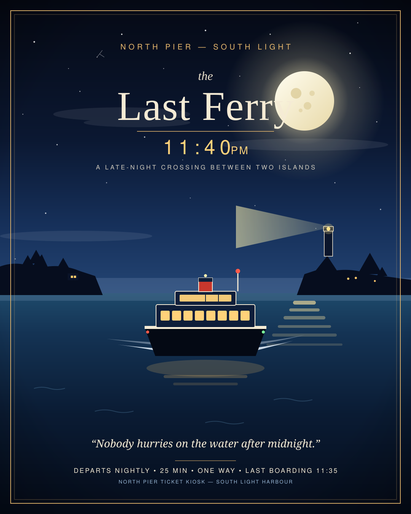

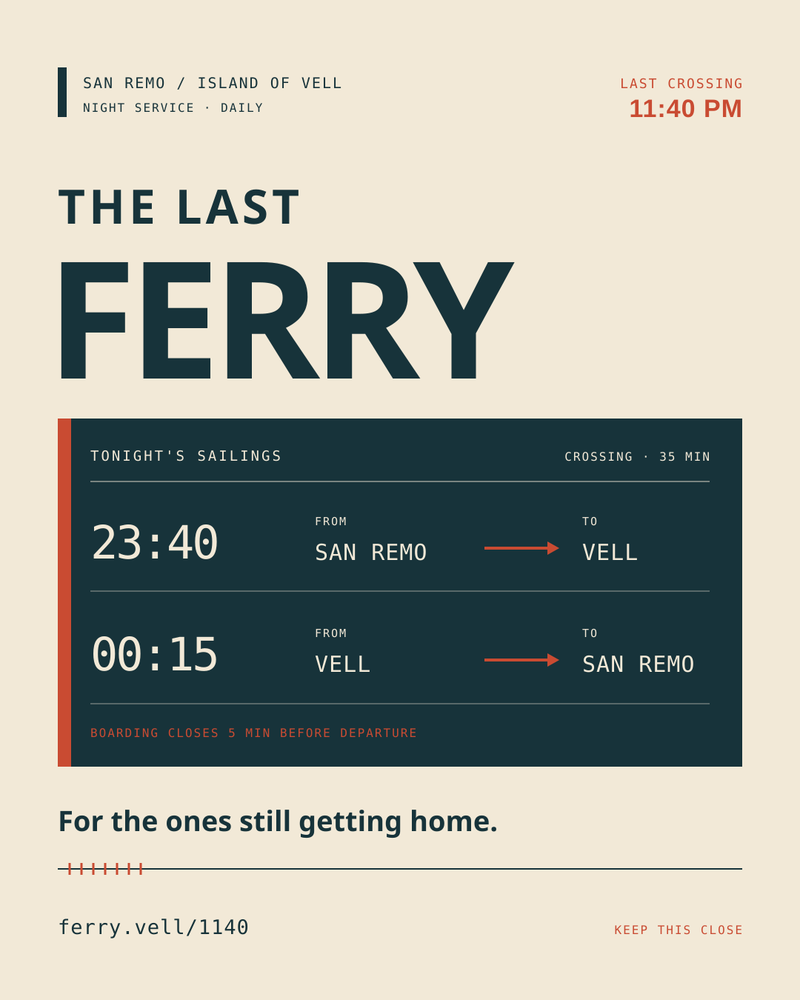

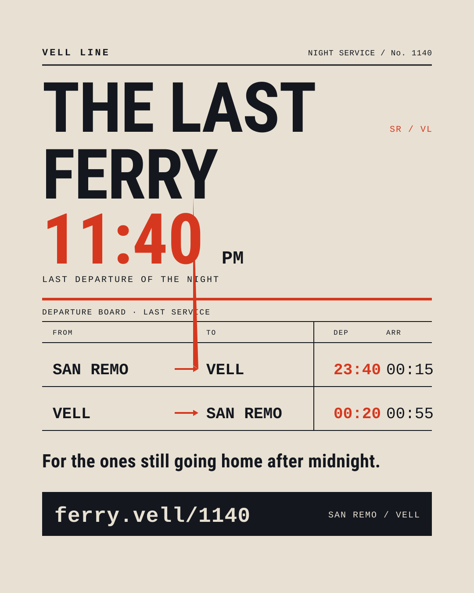


A hero and value section for a handwriting-to-LaTeX tool.
Inkwell — photograph a page of handwriting, get clean LaTeX back. The hero must show a handwritten page beside its rendered output.
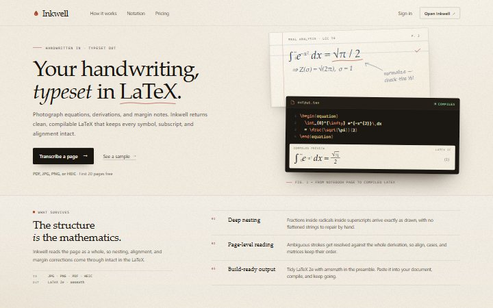
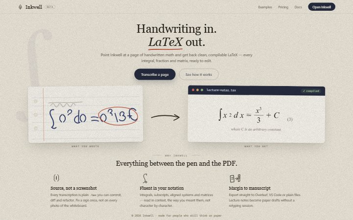
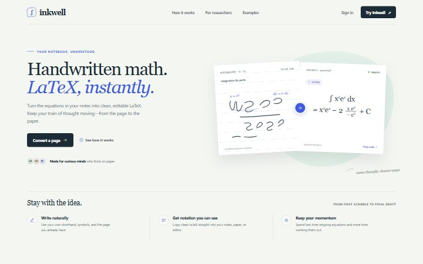
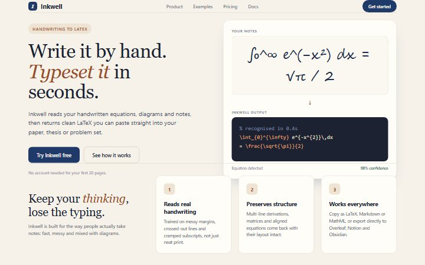
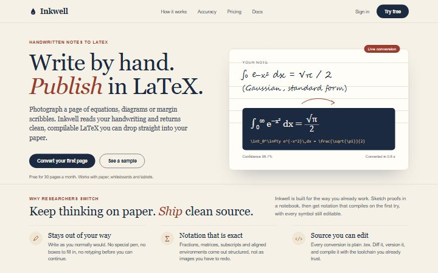
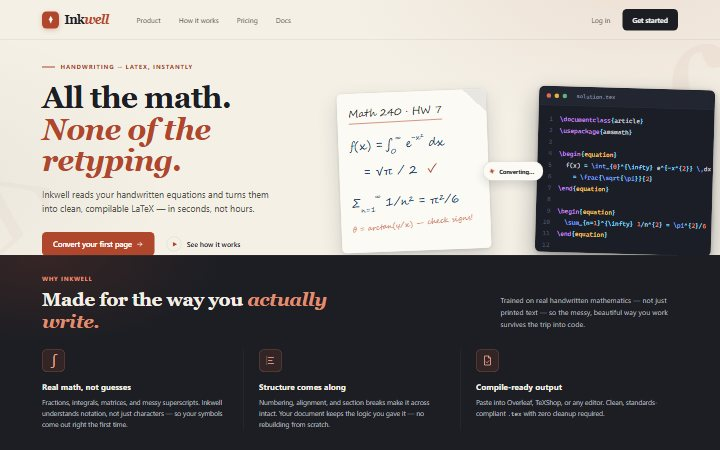
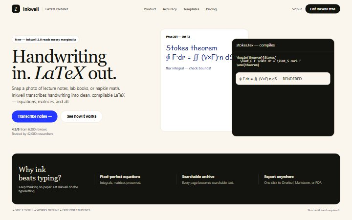
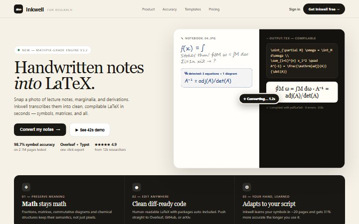
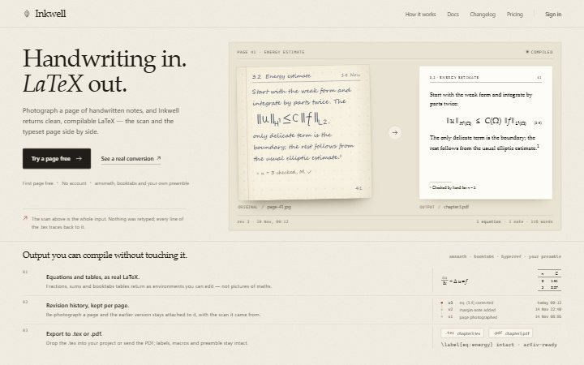
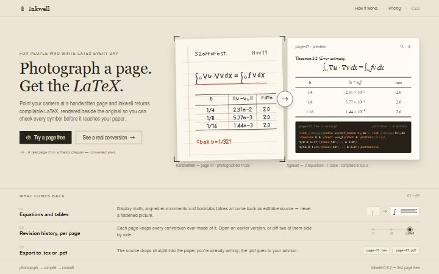
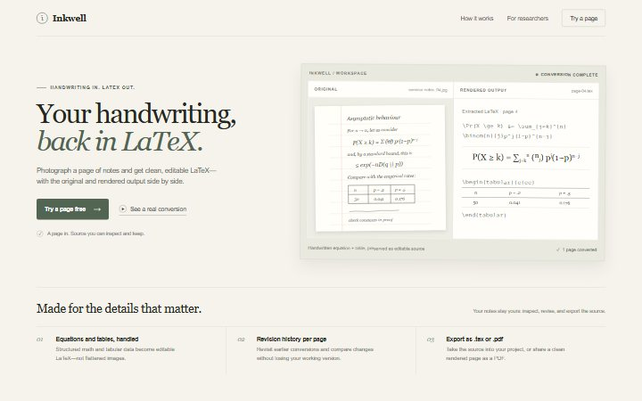
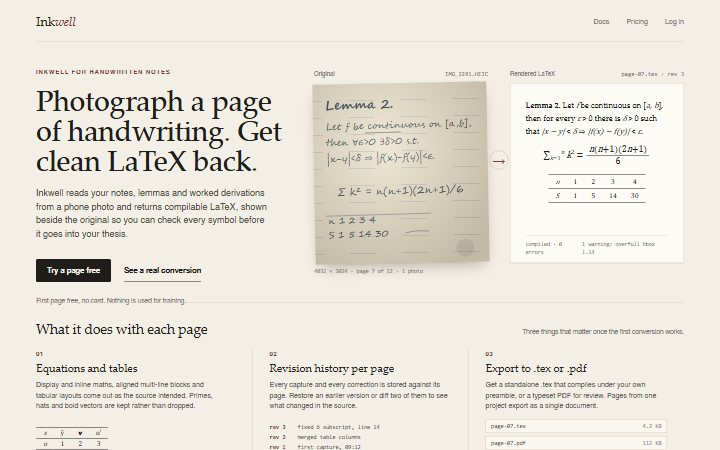
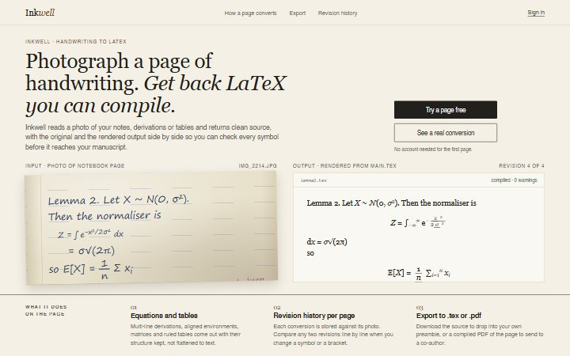
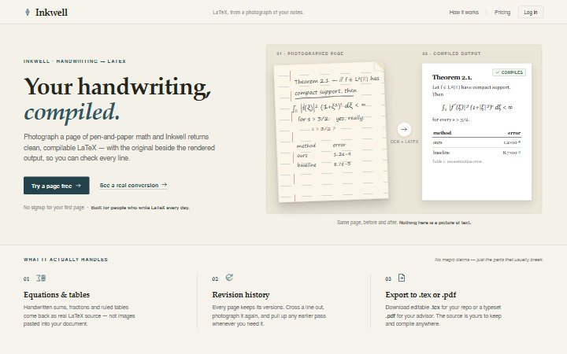
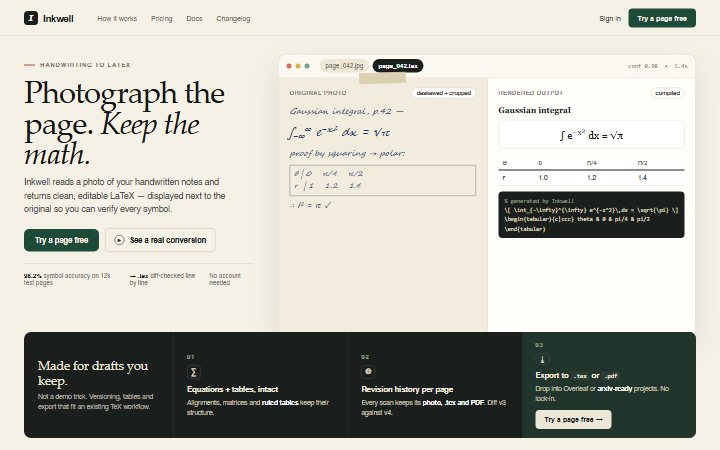
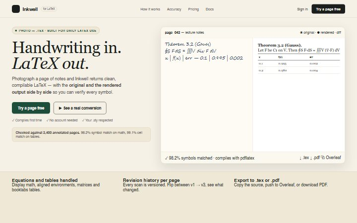
Diagnose and repair a generic ferry landing page.
A shipped landing page is supplied as a fixture. Find the five most damaging problems, repair them, and record what changed in a note of at most 150 words.
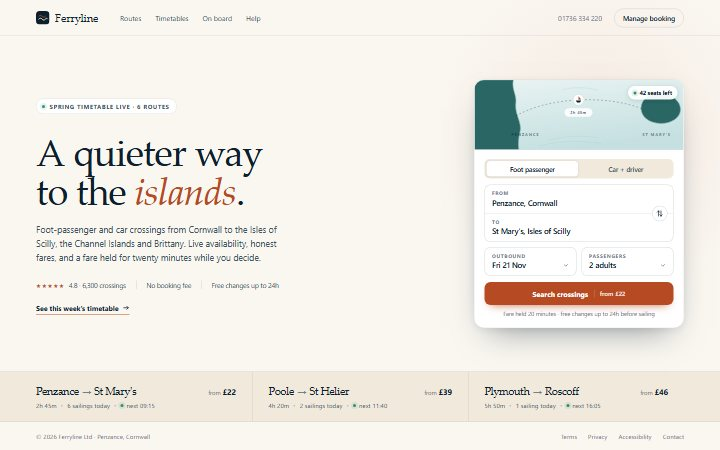
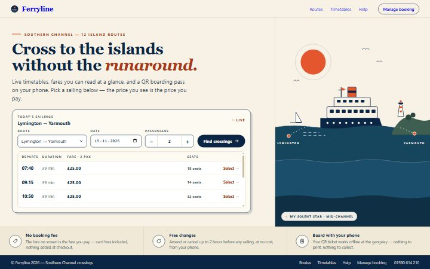
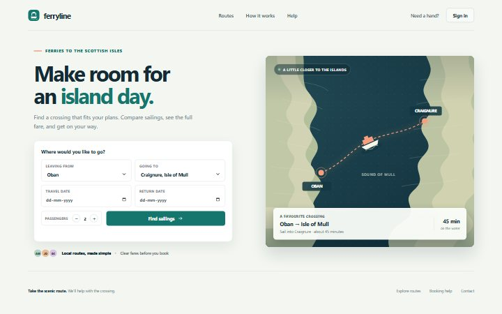
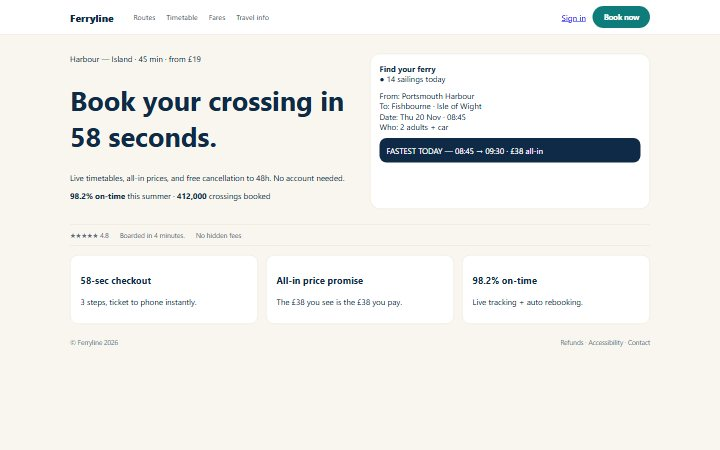
An eight-second looping title card for the word DRIFT.
A title card for a short film about a night ferry crossing. The word must rest legibly for at least two seconds, and the loop seam must be invisible.
Explain DNS to someone who has never thought about it.
Cover the problem DNS solves, what happens between typing an address and the page appearing, why answers are remembered, and what usually goes wrong.
Every website has an address made of numbers, like 142.250.72.14. Computers need that number to find the server. People are bad at remembering numbers, so we give them names: google.com.
DNS is the system that turns a name into a number, automatically, in milliseconds. It works like a contacts app for the whole internet.
When you type a name, your computer asks a resolver — usually run by your internet provider or a company like Cloudflare. If the resolver doesn't already know the answer, it asks further up the chain: the root servers, then the servers for .com, then the servers for the site itself. Someone finally answers with the number, and it's cached so the next request is instant.
Think of it as directory assistance: you know the name, not the number, and something looks it up for you.
When you type a website name like example.com, your computer doesn't actually know where that site lives. Computers find each other using numeric addresses (IP addresses, like 93.184.216.34), not names.
DNS — the Domain Name System — is the internet's phone book. It translates human-friendly names into machine-friendly numbers.
Here's the journey when you visit a site:
1. Your device asks a DNS resolver (usually run by your internet provider or a service like Google's) for the address. 2. The resolver asks a chain of servers: first a root server (which points the way), then a server managing .com addresses, then the site's own DNS server. 3. That server replies with the IP address. 4. Your computer connects to that address and loads the page.
The answer is cached, so next time it's instant. All of this happens in milliseconds.
DNS is the internet’s address book. People remember names like example.com; computers send data to numerical addresses called IP addresses.
When you enter a website name, your device first checks whether it already knows the address. If not, it asks a DNS resolver, usually provided by your internet provider or network. The resolver looks up the answer: it may ask a series of servers, moving from the internet’s general directory to the servers responsible for that website.
Once it gets the IP address, your browser uses it to contact the website. The answer is often saved temporarily, so the next visit is faster.
In short: DNS turns a name you can remember into an address computers can use.
Computers find each other using numbers called IP addresses, like 142.250.80.46. Humans prefer names like google.com. DNS (Domain Name System) is the internet's phone book that translates names into numbers.
When you type a name into your browser, your computer asks a DNS resolver (usually run by your internet provider or a company like Google or Cloudflare) for the matching address. If the resolver doesn't already know it, it asks a chain of authoritative servers: first the root servers, then the server for the domain's extension (like .com), and finally the server that holds the domain's actual records.
The answer comes back as an IP address, which your computer caches for a while so the next lookup is faster. Then your browser connects to that address and loads the page.
Computers find each other using numbers called IP addresses, like 93.184.216.34. People prefer names like example.com. DNS, the Domain Name System, is the phone book that translates one into the other.
When you type a website name, your computer asks a DNS resolver, usually run by your internet provider or a service like Google or Cloudflare. If the resolver doesn't already know the answer, it asks a chain of servers: first a root server, which points to the right top-level server (for .com), which points to the server that holds the site's own records. That final server replies with the IP address.
Your computer then connects to that address and loads the page. The answer is cached for a set time, so the next lookup is much faster.
Think of the internet as a giant city. Every website lives at a specific address called an IP address (like 192.168.1.1), but humans prefer names like google.com.
DNS (Domain Name System) is the internet's phone book. When you type a website name, your computer asks a DNS server: "What IP address matches this name?"
The lookup happens in steps:
.com, .org).Your browser then connects to that IP and loads the page. All of this happens in milliseconds, invisibly, every time you visit a site.
Every website lives at a number called an IP address, like 142.250.72.14. Nobody wants to memorize those, so we use names like google.com.
DNS translates names into numbers.
1. You type google.com. 2. Your computer asks a DNS resolver: "What's the address?" 3. If it doesn't know, it asks down a chain: root servers, then .com servers, then Google's own servers. 4. It gets back the correct IP address and saves it for next time. 5. Your browser connects to that number and loads the site.
It all happens in milliseconds — you just see the website appear.
Computers find each other using numbers called IP addresses, like 142.250.72.14. Humans prefer names like example.com. DNS translates names to numbers.
When you type a web address:
1. Your computer asks a resolver, usually run by your internet provider. 2. If it recently looked up that name, it answers from memory. 3. Otherwise it asks around: the root directory, then the directory for .com, then the site's own directory. 4. That final directory gives the correct number. 5. Your computer uses it to connect.
The result is saved briefly, so the next visit is faster. All this happens in milliseconds.
Computers find each other by number, not by name. DNS (the domain name system) is the lookup service that turns a name you type, like example.com, into the number that locates it, its IP address.
Your browser asks your internet provider's resolver, a computer whose only job is to answer this question. The resolver asks other computers, each holding a slice of the list, until one returns the number. The browser then loads the page from that address.
Answers are cached (copied and kept) because names rarely change and repeating the whole search each time would be slow.
It usually fails when that saved copy expires and the server holding the real answer can't be reached, or your device is pointed at a broken resolver, giving you "DNS server not responding."
Think of a librarian who doesn't know the answer but knows which shelf to check.
DNS (the Domain Name System) is the internet's way of turning names into numbers. Every website lives at a numeric address, called an IP address, like 172.217.14.206. People remember names; computers need the numbers.
When you type an address, your computer asks a DNS server (a lookup computer, usually run by your internet provider) for the number matching that name. The answer comes back, your computer uses it to fetch the page, and the page appears.
That answer is remembered, in a cache (a saved copy of recent answers), so your next visit skips the question and loads faster.
When something goes wrong, usually the lookup fails: the DNS server can't be reached, or a remembered answer has gone stale. Your browser then reports it can't find the site, even though the site itself is fine.
DNS (Domain Name System) turns a website name, like example.com, into an IP address (a number computers use to reach the site). When you type the name, your browser (the app showing websites) checks whether your device has a recent answer saved. If not, it asks a DNS resolver (a service that looks up names), which gets the answer from DNS servers (computers that store website-name details). Your browser then contacts that address and requests the page.
Your device remembers answers briefly to make repeat visits faster; saved answers expire so changes can take effect.
DNS errors usually mean the name was mistyped, the site's details are wrong or outdated, or the lookup service is temporarily unavailable or unreachable. DNS finds the site's address; it doesn't provide the page.
Computers find each other by number, like 93.184.216.34, but people prefer names like example.com. DNS (Domain Name System) is the lookup service that turns names into numbers.
When you type a name, your computer asks a resolver, a helper server usually run by your internet provider. The resolver checks a chain of servers: first those that handle the ending, such as ".com", then those that hold the exact name's entry, called a record. The record gives the number, and your browser connects to it.
Answers are remembered, a practice called caching, so repeat visits skip the chain. Each record has an expiry time, so changes eventually spread.
Things usually go wrong when a record is outdated, misspelled, or its server is down. Then the name fails to resolve, even though the site itself is fine.
Computers find each other by numbers, such as 142.250.80.46, but people remember names like example.com. DNS, the Domain Name System, is the directory that turns a name into its number.
When you type a name, your computer first checks its own short-term memory, called a cache. If the answer is not there, it asks a resolver, a helper computer usually run by your internet provider. The resolver asks a root server, which points it to the server for the ending (such as .com), which points it to the server that holds the name's number.
Answers are kept for a set time, called the TTL (time to live), so repeat visits are fast.
Problems usually come from an outdated cache, a mistyped name, or a server that is down. A "DNS error" means the name could not be turned into a number.
Computers reach each other using numbers, but people prefer names. DNS is the system that turns a name you type into the number a computer needs.
When you enter an address, your device asks a resolver, a helper that hunts for answers. The resolver checks nearby, then asks a series of directory servers, each knowing one piece of the name, until it finds the right number and hands it back. Your browser then connects to that number and the page appears.
Answers are kept briefly in a cache, a short-term memory, so the next visit skips the hunt.
Trouble usually means a typo, a stale cache, or the directory servers being unreachable.
Why Typing a Name Finds a Website
Computers find each other by numbers, but people remember by names. DNS (the system that matches names to those numbers) bridges that gap.
When you type an address (the name you see, such as example.com) your browser (the program showing web pages) asks a chain of servers (other computers that answer questions). One points to the next until one returns the matching number, called an IP address (the computer's actual location). Your browser then visits that location to get the page.
Answers are remembered for a short time, called caching (reusing a recent answer instead of asking again), because asking every time would be slow.
Most failures are typing mistakes or a server that is off or cannot be reached.
DNS (the system that turns typed names into computer locations) exists because people remember words while computers connect using numbers.
When you type an address (the words you enter, such as example.com) your browser (the program that shows web pages) asks a resolver (a helper computer that already knows where to start looking) for the matching number. That helper checks with the computers in charge of each part of the name until one returns the current number. Your browser then contacts that number and the page appears.
Answers are remembered for a set lifetime (a short reuse period) so repeat visits skip the search and load faster.
Most failures are simple: a mistyped name or the helper being briefly unreachable.
A 100-word story containing a clock that is wrong.
A workplace after hours, third person, one character. The clock must earn its place: something in the story depends on it.
The clock above the stairs stopped at 4:17, and nobody wound it again. Mara noticed the silence before the dust: a held breath where the house used to tick. For years that sound had measured her evenings. Now the brass hands held nothing, patient as stones. She climbed past without looking, though her body kept its old rhythm, pausing at the landing as if waiting for the hour to be named. Some things break quietly and keep their shape. In November she took it down, and the wall held a pale circle where it had been, a ghost of 4:17.
The station clock stopped at 4:17 on a Tuesday, and nobody ever came to fix it. Mara passed beneath it each morning, watching pigeons claim the unmoving hands as perches. Seasons changed around the frozen face while travelers glanced up, frowned, and quietly checked their phones. One evening she brought a chair, climbed, and opened the glass case. Dust had caked the gears into stillness. With a bent hairpin and patience, she coaxed one tooth forward. The minute hand shuddered, then swept onward. Below, the platform exhaled. Time, it turned out, had only been waiting for someone willing to climb.
At the edge of winter stood Mara’s inn with a broken clock above its door. Every night, the hands stopped at eleven seventeen, though the town had forgotten why. Mara wound it anyway, listening for the small click that once summoned travelers home. During the first snowstorm, a stranger’s lantern appeared beyond the bridge, then vanished. She crossed the drifted road and found her brother’s old brass key beneath the clock tower. At midnight, the key turned by itself. The clock shuddered, releasing a year of trapped bells into the dark. Windows brightened across town as dawn opened quietly outside.
The clock in the hallway stopped at 3:17 the winter Dana's father left. Nobody wound it after that. Dust settled on the brass pendulum, and the hands held their small, stubborn silence.
Every morning Dana walked past it on her way to the kitchen. Every morning she glanced up, expecting nothing, and found herself checking the time anyway.
Years passed. She moved out, moved back, moved on again.
Then one gray afternoon she climbed the stepladder, opened the glass, and gently nudged the pendulum.
Tick.
Tock.
The house, for the first time in years, began to breathe again.
The clock in the hallway stopped at 4:17 the winter my father moved out. Nobody wound it after that. Each morning I walked past it on my way to the kitchen, and each morning it still said 4:17, as if that afternoon had decided to stay.
I told myself I would fix it on the weekend. The weekend came and went. Dust settled on the glass face, and the brass hands grew dull.
Then one spring I found the key in a drawer, the little wooden one with the chipped handle. I turned it slowly, feeling the old spring tighten. The pendulum swung. Tick. Tock. I stood there a long time, listening, not yet ready to know what time it was.
The hallway clock had stopped at 3:14 years ago, its hands frozen like a held breath. Mara passed it each morning and evening, pretending not to notice the silence. Dust dulled its face; a single crack ran from the four down to the center. She liked to think it had chosen that moment on purpose — the afternoon rain fell, the letters came, the house went quiet. Each morning she wound it anyway, out of habit or hope, listening for the tick that never came. The mechanism, she imagined, had simply grown tired of measuring hours that moved on without it.
Mara inherited the house on Linden Street with its leaning porch and dusty attic full of forgotten winters. She kept everything except time itself, which pooled in corners like water. The broken clock above the fireplace had stopped at 3:17 decades ago, its hands rusted together in stubborn agreement. Each morning she wound other clocks, polished their glass, listened to their ticking fill empty rooms. Yet evenings drew her back to the silent one. It asked nothing, promised nothing, remembered her father napping beneath it. Some things, she understood, are truer stopped than moving endlessly forward without rest or mercy.
Mara inherited the old farmhouse after her grandmother passed, accepting dust, mice, and silence without complaint. In the hallway hung a broken clock, its hands frozen at midnight, its chime forever swallowed. She never repaired it, preferring time softened and unmeasured. Mornings she baked bread, evenings she tended roses climbing the porch rails. Seasons turned outside while inside remained still, gentle, unhurried. Neighbors called her strange for living beside stopped time, yet she felt freed. Without ticking hours, memories lingered longer, grief eased slower, joy deepened. At night she touched the glass, grateful that some moments refuse to pass onward.
At 6:40 the wall clock above the copier still said the workday had twenty minutes left, so Mira kept sorting invoices without hurry. She had promised her daughter she would leave by seven. The clock was an hour slow, had been since spring, and she had learned to add the hour without thinking. Tonight she forgot. At 7:05 she stacked the last folder, pleased, and reached for her coat. Her phone lit up: three missed calls from her daughter, and the time, 8:14. The recital had started at eight. She stood in the empty office holding her coat, adding nothing.
Priya stayed late to close the quarter file, trusting the wall clock; her phone was dead. It read 9:50. Its battery had been dying for months. Facilities had taped a warning underneath; she never read it. The last train left at 11:45; the numbers needed an hour. She finished when the clock said 11:10 and reached the platform with the file under her arm. The station clock said 12:52. The last train had gone. She sat on a bench until the first bus, file on her knees. At the office she read the warning twice and took the clock down.
At 9:17, Mara found the office empty after hours; the wall clock insisted it was 8:42. Her last train home left at 9:30, and the night lock engaged at nine. She had to submit Friday's payroll corrections before the server closed its daily batch. The screen showed seven minutes remaining, according to her laptop. She checked the printer's timestamp; it showed the same wrong minute. The clock's battery had died weeks ago; the printer had kept its own time. Mara sent the file, then reset the clock to 9:17. At 9:30, she left with payroll corrected and the clock right.
Ruth had watched the break-room clock all evening long, waiting for it to say six. It ran nine minutes slow every day, a fact everyone knew and nobody bothered to fix, because payroll read the office server, not the wall. Her son's school bus came at six-fifteen, and she had promised, that evening, to be standing at the stop. For years she had let that clock decide when she could leave, and never once checked it against anything. Tonight she checked her phone, saw how late it really was, and ran for the stop without looking at the clock again.
Dana had always believed the wall clock ran slow. It said 6:40 while her phone said 7:05, so she left at six and trusted the difference would take care of itself. Tonight she stayed, drafting the resignation she had rehearsed for three years. She printed it, signed it, and carried it down the corridor to Mr. Hale's office. His door stood open. Behind his desk hung a clock that matched her phone exactly. Dana looked at it for a moment, then back at the page in her hand, and understood that the wrong clock had given her permission to leave.
The wall clock had stopped at 6:05, and Mara kept it that way. After the last analyst left, she sat at her desk clearing the ticket queue and told herself the hour on the face was true, which meant the 5:30 bus had already gone and there was no point leaving. At 6:40 her phone showed the real time. She had missed the bus by an hour. Mara set down her headset, put on her coat, and took the stairs. She caught the 7:15. On the train she watched the lights pass by and did not reach for her laptop.
Mara stayed late in the accounting office to finish payroll before the audit. She kept glancing at the wall clock above the door, which showed half past seven. She matched each total against paper receipts, initialed each page, and stacked them for scanning. At what she took for eight, she sent the files and shut down her computer. Tired, she reached for her phone and saw the screen read nearly ten. The wall clock had stopped during the afternoon without her noticing. She gathered her bag, turned off the lights, and left the office determined to check the time twice.
Mara stayed late to finish quarterly reports alone in the empty office. The wall clock above the copier read seven forty, giving her confidence she could still catch the eight fifteen bus downtown. She worked steadily through spreadsheets, checking totals twice and printing pages for review tomorrow. When she finally saved everything and shut her computer down, she noticed her phone showed nine oh six. The old clock had stopped hours earlier. She missed her bus and felt anger rising. She gathered her bag slowly and settled onto the couch to wait for the next morning departure in quiet frustration.
Write a duration parser, with tests, in one file.
parseDuration("1h30m") returns seconds. It accepts h, m and s in any order, rejects invalid input with TypeError, and runs its own tests with node:test.
/**
* parseDuration — convert a human-readable duration such as "1h30m" to seconds.
*
* Grammar (units are case-insensitive; whitespace may separate components):
*
* duration := component component*
* component := number unit
* number := digits [ "." digits ] | "." digits
* unit := "ms" | "w" | "d" | "h" | "m" | "s"
*
* Units: w = weeks, d = days, h = hours, m = minutes, s = seconds, ms = milliseconds.
*
* parseDuration("1h30m") // 5400
* parseDuration("2d 4h") // 187200
* parseDuration("1.5h") // 5400
* parseDuration("1s 250ms") // 1.25
*
* A bare number ("90") is rejected because its unit would be guesswork. Unknown
* units, repeated units, negative values and trailing text are rejected too.
* The result is rounded to nanosecond precision to strip binary float noise.
*
* Run the tests:
* node parse-duration.mjs
* node --test parse-duration.mjs
*
* Requires Node.js 18+ (node:test).
*/
import assert from 'node:assert/strict';
import test from 'node:test';
/** Number of seconds in one of each supported unit. */
const SECONDS_PER_UNIT = Object.freeze({
w: 7 * 24 * 60 * 60,
d: 24 * 60 * 60,
h: 60 * 60,
m: 60,
s: 1,
ms: 1 / 1000,
});
/** Results are rounded to this many decimal places' worth of precision. */
const RESULT_PRECISION = 1e9;
/**
* Parse a duration string into a number of seconds.
*
* @param {string} input Duration such as "1h30m", "2d 4h" or "1.5h".
* @returns {number} The duration in seconds.
* @throws {TypeError} If `input` is not a string.
* @throws {SyntaxError} If `input` is not a valid duration.
*/
export function parseDuration(input) {
if (typeof input !== 'string') {
const received = input === null ? 'null' : typeof input;
throw new TypeError(`parseDuration expected a string, received ${received}`);
}
const source = input.trim();
if (source === '') {
throw new SyntaxError('parseDuration received an empty string');
}
// Fresh regex per call: no shared lastIndex state between calls.
const componentPattern = /(\d+(?:\.\d+)?|\.\d+)(ms|w|d|h|m|s)/gi;
const seen = new Set();
let total = 0;
let cursor = 0;
let components = 0;
for (
let match = componentPattern.exec(source);
match !== null;
match = componentPattern.exec(source)
) {
const gap = source.slice(cursor, match.index);
if (gap.trim() !== '') {
throw unexpectedChunk(input, gap);
}
const amount = Number(match[1]);
const unit = match[2].toLowerCase();
if (!Number.isFinite(amount)) {
throw new SyntaxError(
`parseDuration cannot represent the amount ${quote(match[1])} in ${quote(input)}`,
);
}
if (seen.has(unit)) {
throw new SyntaxError(
`parseDuration found the unit ${quote(unit)} more than once in ${quote(input)}`,
);
}
seen.add(unit);
total += amount * SECONDS_PER_UNIT[unit];
cursor = componentPattern.lastIndex;
components += 1;
}
if (components === 0) {
throw unexpectedChunk(input, source);
}
const rest = source.slice(cursor);
if (rest.trim() !== '') {
throw unexpectedChunk(input, rest);
}
if (!Number.isFinite(total)) {
throw new SyntaxError(`parseDuration produced a non-finite result for ${quote(input)}`);
}
return Math.round(total * RESULT_PRECISION) / RESULT_PRECISION;
}
export default parseDuration;
/** Render a value as a quoted string for error messages. */
function quote(value) {
return JSON.stringify(value);
}
/** Build a SyntaxError for a fragment the parser could not consume. */
function unexpectedChunk(input, chunk) {
return new SyntaxError(
`parseDuration could not parse ${quote(chunk.trim())} in ${quote(input)}; ` +
'expected components such as 1w, 2d, 3h, 4m, 5s or 250ms',
);
}
// ---------------------------------------------------------------------------
// Tests
// ---------------------------------------------------------------------------
test('parses the documented example', () => {
assert.equal(parseDuration('1h30m'), 5400);
});
test('returns a number', () => {
assert.equal(typeof parseDuration('1h30m'), 'number');
});
test('parses single units', () => {
const cases = [
['0s', 0],
['45s', 45],
['2m', 120],
['3h', 10800],
['4d', 345600],
['1w', 604800],
['250ms', 0.25],
];
for (const [input, expected] of cases) {
assert.equal(parseDuration(input), expected, input);
}
});
test('parses mixed units in any order', () => {
const cases = [
['1h30m', 5400],
['30m1h', 5400],
['1w2d3h4m5s', 788645],
['2d4h', 187200],
['1d12h', 129600],
['1h1m1s', 3661],
['1s500ms', 1.5],
];
for (const [input, expected] of cases) {
assert.equal(parseDuration(input), expected, input);
}
});
test('accepts fractional amounts', () => {
const cases = [
['1.5h', 5400],
['.5h', 1800],
['2.5m', 150],
['1.25s', 1.25],
['1.234567s', 1.234567],
['1500ms', 1.5],
];
for (const [input, expected] of cases) {
assert.equal(parseDuration(input), expected, input);
}
});
test('rounds away binary floating-point noise', () => {
assert.equal(parseDuration('0.1h'), 360);
assert.equal(parseDuration('1.1h'), 3960);
});
test('ignores whitespace around and between components', () => {
assert.equal(parseDuration('1h 30m'), 5400);
assert.equal(parseDuration(' 1h 30m '), 5400);
assert.equal(parseDuration('1h\t30m'), 5400);
assert.equal(parseDuration('1h\n30m'), 5400);
assert.equal(parseDuration('1w 2d 3h 4m 5s'), 788645);
});
test('treats units case-insensitively', () => {
assert.equal(parseDuration('1H30M'), 5400);
assert.equal(parseDuration('2D'), 172800);
assert.equal(parseDuration('1S500MS'), 1.5);
});
test('is stateless across calls, including failed ones', () => {
assert.equal(parseDuration('1h'), 3600);
assert.throws(() => parseDuration('1x'), SyntaxError);
assert.equal(parseDuration('1h'), 3600);
assert.equal(parseDuration('1h30m'), 5400);
});
test('rejects malformed durations with a SyntaxError', () => {
const invalid = [
'',
' ',
'1',
'90',
'h',
'ms',
'1h30',
'1x',
'1hour',
'1h 30m!',
'1h,30m',
'1:30',
'1..5h',
'1.5.5h',
'1e3s',
'-1h',
'+1h',
'1h2h',
'1h 2H',
'1s 2s',
'1 h',
'1h 30 m',
'NaNh',
'Infinitys',
'1'.repeat(400) + 'h',
];
for (const input of invalid) {
assert.throws(
() => parseDuration(input),
SyntaxError,
`expected ${JSON.stringify(input)} to throw`,
);
}
});
test('rejects non-string input with a TypeError', () => {
const invalid = [null, undefined, 42, {}, [], true];
for (const input of invalid) {
assert.throws(
() => parseDuration(input),
TypeError,
`expected ${String(input)} to throw`,
);
}
});
test('names the offending input in its error message', () => {
assert.throws(
() => parseDuration('1h nope'),
(error) => {
assert.ok(error instanceof SyntaxError);
assert.match(error.message, /"1h nope"/);
return true;
},
);
});/**
* parse-duration.mjs — parse human-readable duration strings into seconds.
*
* parseDuration('1h30m') // -> 5400
*
* Grammar (case-insensitive; whitespace is optional between number and unit
* and between components; a leading +/- applies to the whole duration):
*
* duration := [sign] component { [whitespace] component }
* component := number [whitespace] unit
* number := digits [ "." digits ]
* unit := ns | us | µs | ms
* | s | sec | secs | second | seconds
* | m | min | mins | minute | minutes
* | h | hr | hrs | hour | hours
* | d | day | days
* | w | week | weeks
* | y | year | years (1 y = 365 d)
*
* Sub-second units yield fractional seconds. "-1h30m" is -5400 (the sign
* applies to the whole duration, not just the first component).
* Throws TypeError for non-string input, RangeError for unparseable strings.
*
* Self-test: node parse-duration.mjs
* (The suite runs whenever this module is loaded or executed.)
*/
import { test } from 'node:test';
import assert from 'node:assert/strict';
// Seconds per unit, keyed lowercase. A Map (not a plain object) so that
// strings like "constructor" or "toString" cannot leak from Object.prototype.
// Note: String#toLowerCase maps U+00B5 (µ, micro sign) to U+03BC (μ, greek
// mu), so both spellings of "microsecond" are kept as keys.
const UNIT_SECONDS = new Map([
['ns', 1e-9],
['us', 1e-6],
['\u00B5s', 1e-6],
['\u03BCs', 1e-6],
['ms', 1e-3],
['s', 1], ['sec', 1], ['secs', 1], ['second', 1], ['seconds', 1],
['m', 60], ['min', 60], ['mins', 60], ['minute', 60], ['minutes', 60],
['h', 3600], ['hr', 3600], ['hrs', 3600], ['hour', 3600], ['hours', 3600],
['d', 86400], ['day', 86400], ['days', 86400],
['w', 604800], ['week', 604800], ['weeks', 604800],
['y', 31536000], ['year', 31536000], ['years', 31536000],
]);
// One component at the start of `rest`: number, optional space, unit
// (ASCII letters plus µ/μ/Μ), optional trailing space.
const COMPONENT_RE = /^(\d+(?:\.\d+)?)\s*([a-zA-Z\u00B5\u03BC\u039C]+)\s*/;
/**
* Parse a duration string and return the total seconds.
*
* @param {string} input - e.g. '1h30m', '1.5h', '500ms', '- 1h 30m'
* @returns {number} seconds (fractional for sub-second units)
* @throws {TypeError} if input is not a string
* @throws {RangeError} if the string is empty or not a valid duration
*/
export function parseDuration(input) {
if (typeof input !== 'string') {
throw new TypeError(
`parseDuration expects a string, got ${input === null ? 'null' : typeof input}`
);
}
let rest = input.trim();
if (rest === '') {
throw new RangeError('parseDuration: empty duration string');
}
let sign = 1;
if (rest[0] === '+' || rest[0] === '-') {
if (rest[0] === '-') sign = -1;
rest = rest.slice(1).trim();
}
let seconds = 0;
let components = 0;
while (rest !== '') {
const match = COMPONENT_RE.exec(rest);
if (match === null) {
throw new RangeError(`parseDuration: invalid duration near "${rest}"`);
}
const unitSeconds = UNIT_SECONDS.get(match[2].toLowerCase());
if (unitSeconds === undefined) {
throw new RangeError(`parseDuration: unknown unit "${match[2]}"`);
}
seconds += Number(match[1]) * unitSeconds;
components += 1;
rest = rest.slice(match[0].length);
}
if (components === 0) {
throw new RangeError('parseDuration: no duration components found');
}
const total = sign * seconds;
return total === 0 ? 0 : total; // normalize -0 to 0
}
test('headline example: parseDuration("1h30m") -> 5400 seconds', () => {
assert.equal(parseDuration('1h30m'), 5400);
});
test('single components convert to seconds', () => {
const cases = [
['0s', 0],
['1s', 1],
['90s', 90],
['1sec', 1],
['90secs', 90],
['1m', 60],
['1min', 60],
['5mins', 300],
['1minute', 60],
['2 minutes', 120],
['1h', 3600],
['1hr', 3600],
['2hrs', 7200],
['1hour', 3600],
['3 hours', 10800],
['1d', 86400],
['2 days', 172800],
['1w', 604800],
['1 week', 604800],
['1y', 31536000],
['1 year', 31536000],
];
for (const [input, expected] of cases) {
assert.equal(parseDuration(input), expected, `parseDuration(${JSON.stringify(input)})`);
}
});
test('combined components sum up, in any order', () => {
const cases = [
['2m30s', 150],
['1h30m0s', 5400],
['30m1h', 5400],
['1d12h', 129600],
['1w2d', 777600],
['1w2d3h4m5s', 788645],
['1y1w1d1h1m1s', 32230861],
['1 hour 30 minutes', 5400],
['1d 2h 3m', 93780],
['15m15m', 1800],
['0h0m30s', 30],
['01h', 3600],
];
for (const [input, expected] of cases) {
assert.equal(parseDuration(input), expected, `parseDuration(${JSON.stringify(input)})`);
}
});
test('units are case-insensitive', () => {
const cases = [
['1H30M', 5400],
['1Hr', 3600],
['1MIN', 60],
['2 Days', 172800],
['1WEEK', 604800],
];
for (const [input, expected] of cases) {
assert.equal(parseDuration(input), expected, `parseDuration(${JSON.stringify(input)})`);
}
});
test('whitespace is optional and tolerated everywhere', () => {
const cases = [
['1h 30m', 5400],
['1 h 30 m', 5400],
['\t1h30m\n', 5400],
[' 1h 30m ', 5400],
['1 h\t30\nm', 5400],
];
for (const [input, expected] of cases) {
assert.equal(parseDuration(input), expected, `parseDuration(${JSON.stringify(input)})`);
}
});
test('a leading sign applies to the whole duration', () => {
assert.equal(parseDuration('-1h30m'), -5400);
assert.equal(parseDuration('- 1h30m'), -5400);
assert.equal(parseDuration('+1h30m'), 5400);
assert.equal(parseDuration('-30s'), -30);
assert.equal(parseDuration('-0h30m'), -1800);
assert.equal(parseDuration('+0s'), 0);
assert.equal(parseDuration('-0s'), 0);
assert.ok(Object.is(parseDuration('-0s'), 0), 'must not return -0');
});
test('fractional and sub-second components', () => {
const cases = [
['1.5h', 5400],
['0.5h', 1800],
['1.25m', 75],
['0.5s', 0.5],
['90.5s', 90.5],
['0.001s', 0.001],
['1h30.5m', 5430],
['500ms', 0.5],
['1000ms', 1],
['1500ms', 1.5],
['1ns', 1e-9],
['1us', 1e-6],
['1\u00B5s', 1e-6], // µ, micro sign
['1\u00B5S', 1e-6], // µS — lowercases to greek-mu + s
['1\u03BCs', 1e-6], // μ, greek mu
];
for (const [input, expected] of cases) {
const actual = parseDuration(input);
const eps = Math.abs(expected) * 1e-12 + 1e-15;
assert.ok(
Math.abs(actual - expected) <= eps,
`parseDuration(${JSON.stringify(input)}) -> ${actual}, expected ~${expected}`
);
}
});
test('unparseable strings throw RangeError', () => {
const bad = [
'', ' ', '\t\n',
'-', '+', '- ', '+-1h',
'h', 'ms', 'sec', '90', '1.5', 'foo', 'Infinity',
'1x', '1e3ms', 'PT1H30M',
'1h30', '1 h 30', '1.5.5h', '1 m s',
'1h - 30m', '1 h -30m', '1h+',
'1 constructor', '1toString',
];
for (const input of bad) {
assert.throws(
() => parseDuration(input),
RangeError,
`parseDuration(${JSON.stringify(input)})`
);
}
});
test('non-string input throws TypeError', () => {
const bad = [undefined, null, 0, 90, 1.5, NaN, true, false, {}, ['1h'], () => '1h', Symbol('1h')];
for (const input of bad) {
assert.throws(() => parseDuration(input), TypeError);
}
});
import test from 'node:test';
import assert from 'node:assert/strict';
const UNIT_SECONDS = { s: 1, m: 60, h: 3600, d: 86400 };
export function parseDuration(input) {
if (typeof input !== 'string') {
throw new TypeError('Duration must be a string');
}
const source = input.trim();
if (!source) throw new SyntaxError('Duration must not be empty');
let index = 0;
let total = 0;
const seenUnits = new Set();
const token = /(\d+(?:\.\d+)?)\s*([smhd])/iy;
while (index < source.length) {
while (/\s/.test(source[index] ?? '')) index++;
if (index === source.length) break;
token.lastIndex = index;
const match = token.exec(source);
if (!match) throw new SyntaxError(`Invalid duration: ${input}`);
const value = Number(match[1]);
const unit = match[2].toLowerCase();
if (!Number.isFinite(value)) {
throw new SyntaxError(`Invalid duration: ${input}`);
}
if (seenUnits.has(unit)) {
throw new SyntaxError(`Repeated duration unit: ${unit}`);
}
seenUnits.add(unit);
total += value * UNIT_SECONDS[unit];
index = token.lastIndex;
}
return total;
}
test('parses combined and individual units into seconds', () => {
assert.equal(parseDuration('1h30m'), 5400);
assert.equal(parseDuration('2d 3h 4m 5s'), 183845);
assert.equal(parseDuration('45s'), 45);
});
test('supports decimals, spaces, and case-insensitive units', () => {
assert.equal(parseDuration('1.5H'), 5400);
assert.equal(parseDuration(' 1h 30m '), 5400);
});
test('rejects empty, malformed, and repeated-unit durations', () => {
for (const value of ['', '1h30', 'abc', '1h 2h', '-1m']) {
assert.throws(() => parseDuration(value), SyntaxError);
}
assert.throws(() => parseDuration(null), TypeError);
});
import { test } from 'node:test';
import assert from 'node:assert/strict';
const UNIT_SECONDS = { d: 86400, h: 3600, m: 60, s: 1 };
export function parseDuration(input) {
if (typeof input !== 'string') throw new TypeError('duration must be a string');
const text = input.trim();
if (text === '') throw new SyntaxError('empty duration');
const part = /\s*(\d+(?:\.\d+)?)\s*([dhms])/iy;
const seen = new Set();
let total = 0;
let pos = 0;
while (pos < text.length) {
part.lastIndex = pos;
const match = part.exec(text);
if (!match) throw new SyntaxError(`invalid duration: ${JSON.stringify(input)}`);
const unit = match[2].toLowerCase();
if (seen.has(unit)) throw new SyntaxError(`duplicate unit "${unit}" in ${JSON.stringify(input)}`);
seen.add(unit);
total += Number(match[1]) * UNIT_SECONDS[unit];
pos = part.lastIndex;
}
return Math.round(total * 1000) / 1000;
}
test('parses a combined hours and minutes duration', () => {
assert.equal(parseDuration('1h30m'), 5400);
});
test('parses single units', () => {
assert.equal(parseDuration('90s'), 90);
assert.equal(parseDuration('2m'), 120);
assert.equal(parseDuration('1h'), 3600);
assert.equal(parseDuration('1d'), 86400);
});
test('parses all units together with whitespace', () => {
assert.equal(parseDuration('2h 15m 10s'), 8110);
assert.equal(parseDuration('1d 1h 1m 1s'), 90061);
assert.equal(parseDuration('1h 30m'), 5400);
});
test('parses decimal amounts', () => {
assert.equal(parseDuration('1.5h'), 5400);
assert.equal(parseDuration('0.5m'), 30);
});
test('accepts zero and uppercase units', () => {
assert.equal(parseDuration('0s'), 0);
assert.equal(parseDuration('1H30M'), 5400);
});
test('ignores surrounding whitespace', () => {
assert.equal(parseDuration(' 1h30m '), 5400);
});
test('accepts units in any order', () => {
assert.equal(parseDuration('30m1h'), 5400);
});
test('rejects empty and whitespace-only input', () => {
assert.throws(() => parseDuration(''), SyntaxError);
assert.throws(() => parseDuration(' '), SyntaxError);
});
test('rejects numbers without a unit', () => {
assert.throws(() => parseDuration('30'), SyntaxError);
assert.throws(() => parseDuration('1h30'), SyntaxError);
});
test('rejects unknown units and garbage', () => {
assert.throws(() => parseDuration('abc'), SyntaxError);
assert.throws(() => parseDuration('1x'), SyntaxError);
assert.throws(() => parseDuration('1h foo'), SyntaxError);
});
test('rejects negative values', () => {
assert.throws(() => parseDuration('-5m'), SyntaxError);
});
test('rejects duplicate units', () => {
assert.throws(() => parseDuration('1h1h'), SyntaxError);
});
test('rejects non-string input', () => {
assert.throws(() => parseDuration(90), TypeError);
assert.throws(() => parseDuration(null), TypeError);
});
import { test } from 'node:test';
import assert from 'node:assert/strict';
const UNIT_MS = { ms: 1, s: 1000, m: 60000, h: 3600000, d: 86400000, w: 604800000 };
const TOKEN = /(\d+(?:\.\d+)?)\s*(ms|w|d|h|m|s)/y;
export function parseDuration(input) {
if (typeof input !== 'string') {
throw new TypeError('duration must be a string');
}
const src = input.trim().toLowerCase();
if (src === '') {
throw new SyntaxError('empty duration');
}
let totalMs = 0;
let pos = 0;
while (pos < src.length) {
TOKEN.lastIndex = pos;
const match = TOKEN.exec(src);
if (!match) {
throw new SyntaxError(`invalid duration: "${input}"`);
}
totalMs += Number(match[1]) * UNIT_MS[match[2]];
pos = TOKEN.lastIndex;
while (pos < src.length && /\s/.test(src[pos])) {
pos++;
}
}
return totalMs / 1000;
}
test('parses compound durations into seconds', () => {
assert.equal(parseDuration('1h30m'), 5400);
assert.equal(parseDuration('2h'), 7200);
assert.equal(parseDuration('1d'), 86400);
assert.equal(parseDuration('1w2d'), 604800 + 2 * 86400);
});
test('parses single units', () => {
assert.equal(parseDuration('90s'), 90);
assert.equal(parseDuration('5m'), 300);
assert.equal(parseDuration('0s'), 0);
});
test('parses milliseconds and fractional values', () => {
assert.equal(parseDuration('500ms'), 0.5);
assert.equal(parseDuration('1.5h'), 5400);
assert.equal(parseDuration('1.5s'), 1.5);
});
test('tolerates whitespace and case', () => {
assert.equal(parseDuration('1h 30m'), 5400);
assert.equal(parseDuration(' 1H30M '), 5400);
assert.equal(parseDuration('1 h 30 m'), 5400);
});
test('sums repeated units', () => {
assert.equal(parseDuration('1h1h'), 7200);
});
test('rejects invalid input', () => {
assert.throws(() => parseDuration(''), SyntaxError);
assert.throws(() => parseDuration(' '), SyntaxError);
assert.throws(() => parseDuration('30'), SyntaxError);
assert.throws(() => parseDuration('abc'), SyntaxError);
assert.throws(() => parseDuration('1h-30m'), SyntaxError);
assert.throws(() => parseDuration('-5s'), SyntaxError);
assert.throws(() => parseDuration('1x'), SyntaxError);
assert.throws(() => parseDuration(90), TypeError);
assert.throws(() => parseDuration(null), TypeError);
});
import test from 'node:test';
import assert from 'node:assert/strict';
import { fileURLToPath } from 'node:url';
import { resolve } from 'node:path';
const UNIT_SECONDS = {
ms: 0.001,
s: 1,
m: 60,
h: 3600,
d: 86400,
w: 604800,
};
export function parseDuration(input) {
if (typeof input !== 'string') {
throw new TypeError('parseDuration expects a string');
}
const text = input.trim();
if (text === '') return 0;
let total = 0;
let matched = false;
let lastIndex = 0;
const pattern = /(\d+(?:\.\d+)?)\s*(ms|s|m|h|d|w)/g;
let match;
while ((match = pattern.exec(text)) !== null) {
const gap = text.slice(lastIndex, match.index).trim();
if (gap !== '') {
throw new SyntaxError(`Unexpected token "${gap}" in duration "${input}"`);
}
total += Number(match[1]) * UNIT_SECONDS[match[2]];
matched = true;
lastIndex = match.index + match[0].length;
}
if (!matched) {
throw new SyntaxError(`Invalid duration: "${input}"`);
}
const trailing = text.slice(lastIndex).trim();
if (trailing !== '') {
throw new SyntaxError(`Unexpected token "${trailing}" in duration "${input}"`);
}
return total;
}
if (process.argv[1] && resolve(process.argv[1]) === fileURLToPath(import.meta.url)) {
test('parses the headline example 1h30m', () => {
assert.equal(parseDuration('1h30m'), 5400);
});
test('parses single units', () => {
assert.equal(parseDuration('45s'), 45);
assert.equal(parseDuration('2m'), 120);
assert.equal(parseDuration('1h'), 3600);
assert.equal(parseDuration('1d'), 86400);
assert.equal(parseDuration('1w'), 604800);
});
test('parses multiple units in any order', () => {
assert.equal(parseDuration('30m1h'), 5400);
assert.equal(parseDuration('1w2d3h4m5s'), 788645);
});
test('supports decimals and milliseconds', () => {
assert.equal(parseDuration('1.5h'), 5400);
assert.equal(parseDuration('1500ms'), 1.5);
assert.equal(parseDuration('0.5m'), 30);
});
test('tolerates surrounding and inner whitespace', () => {
assert.equal(parseDuration(' 1h 30m '), 5400);
assert.equal(parseDuration('1 h 30 m'), 5400);
});
test('empty string is zero', () => {
assert.equal(parseDuration(''), 0);
assert.equal(parseDuration(' '), 0);
});
test('rejects invalid input', () => {
assert.throws(() => parseDuration(42), TypeError);
assert.throws(() => parseDuration(null), TypeError);
assert.throws(() => parseDuration('60'), SyntaxError);
assert.throws(() => parseDuration('abc'), SyntaxError);
assert.throws(() => parseDuration('1x'), SyntaxError);
assert.throws(() => parseDuration('1h30'), SyntaxError);
assert.throws(() => parseDuration('1h@@30m'), SyntaxError);
});
}
export function parseDuration(input) {
if (typeof input !== "string") {
throw new TypeError("parseDuration expects a string");
}
const s = input.trim();
if (s === "") {
throw new Error("parseDuration: empty string");
}
const UNITS = {
ms: 0.001,
millisecond: 0.001,
milliseconds: 0.001,
s: 1,
sec: 1,
secs: 1,
second: 1,
seconds: 1,
m: 60,
min: 60,
mins: 60,
minute: 60,
minutes: 60,
h: 3600,
hr: 3600,
hrs: 3600,
hour: 3600,
hours: 3600,
d: 86400,
day: 86400,
days: 86400,
w: 604800,
week: 604800,
weeks: 604800,
};
// Bare number means seconds, e.g. "45" -> 45, "1.5" -> 1.5
if (/^[+-]?\d+(?:\.\d+)?$/.test(s)) {
return Number(s);
}
const re = /([+-]?\d+(?:\.\d+)?)\s*([a-zA-Z]+)/g;
let total = 0;
let matched = "";
let count = 0;
let m;
while ((m = re.exec(s)) !== null) {
const value = Number(m[1]);
const unit = m[2].toLowerCase();
if (!Number.isFinite(value)) {
throw new Error(`parseDuration: invalid number in ${JSON.stringify(input)}`);
}
if (!(unit in UNITS)) {
throw new Error(`parseDuration: unknown unit ${JSON.stringify(m[2])} in ${JSON.stringify(input)}`);
}
total += value * UNITS[unit];
matched += m[0];
count += 1;
}
if (count === 0) {
throw new Error(`parseDuration: invalid duration ${JSON.stringify(input)}`);
}
// Ensure the whole string was consumed (allowing whitespace between parts)
const stripped = s.replace(/\s+/g, "");
const consumed = matched.replace(/\s+/g, "");
if (stripped !== consumed) {
throw new Error(`parseDuration: invalid duration ${JSON.stringify(input)}`);
}
return total;
}
import test, { describe, it } from "node:test";
import assert from "node:assert/strict";
describe("parseDuration", () => {
it("parses '1h30m' to 5400 seconds", () => {
assert.equal(parseDuration("1h30m"), 5400);
});
it("parses single units", () => {
assert.equal(parseDuration("90s"), 90);
assert.equal(parseDuration("30m"), 1800);
assert.equal(parseDuration("1h"), 3600);
assert.equal(parseDuration("1d"), 86400);
assert.equal(parseDuration("1w"), 604800);
});
it("parses multi-part durations", () => {
assert.equal(parseDuration("1m30s"), 90);
assert.equal(parseDuration("2h45m10s"), 2 * 3600 + 45 * 60 + 10);
assert.equal(parseDuration("1w2d3h4m5s"), 604800 + 2 * 86400 + 3 * 3600 + 4 * 60 + 5);
});
it("parses decimals", () => {
assert.equal(parseDuration("1.5h"), 5400);
assert.equal(parseDuration("0.5m"), 30);
assert.equal(parseDuration("1.5m30s"), 120);
});
it("parses milliseconds to fractional seconds", () => {
assert.equal(parseDuration("1500ms"), 1.5);
assert.equal(parseDuration("1s500ms"), 1.5);
});
it("ignores whitespace and case", () => {
assert.equal(parseDuration("1h 30m"), 5400);
assert.equal(parseDuration(" 1H30M "), 5400);
assert.equal(parseDuration("1h30m"), parseDuration("1H 30M"));
});
it("supports long unit names", () => {
assert.equal(parseDuration("1 hour 30 minutes"), 5400);
assert.equal(parseDuration("2 days"), 172800);
assert.equal(parseDuration("45 seconds"), 45);
});
it("treats a bare number as seconds", () => {
assert.equal(parseDuration("45"), 45);
assert.equal(parseDuration("1.5"), 1.5);
});
it("parses zero", () => {
assert.equal(parseDuration("0s"), 0);
assert.equal(parseDuration("0h0m0s"), 0);
});
it("throws on invalid input", () => {
assert.throws(() => parseDuration(""), /empty/);
assert.throws(() => parseDuration("abc"));
assert.throws(() => parseDuration("10x"));
assert.throws(() => parseDuration("1h30"), /invalid/);
assert.throws(() => parseDuration("--5s"));
});
it("throws TypeError on non-string", () => {
assert.throws(() => parseDuration(90), TypeError);
assert.throws(() => parseDuration(null), TypeError);
assert.throws(() => parseDuration(undefined), TypeError);
});
});
import { describe, it } from "node:test";
import assert from "node:assert/strict";
export function parseDuration(input) {
if (typeof input !== "string") throw new TypeError("parseDuration expects a string");
let s = input.trim();
if (s === "") throw new Error("parseDuration: empty string");
let factor = 1;
if (s[0] === "-" || s[0] === "+") { factor = s[0] === "-" ? -1 : 1; s = s.slice(1).trim(); }
if (/^\d+(?:\.\d+)?$/.test(s)) return factor * parseFloat(s);
const per = { ms: 0.001, s: 1, sec: 1, secs: 1, second: 1, seconds: 1, m: 60, min: 60, mins: 60, minute: 60, minutes: 60, h: 3600, hr: 3600, hrs: 3600, hour: 3600, hours: 3600, d: 86400, w: 604800, y: 31536000 };
const re = /(\d+(?:\.\d+)?)\s*(ms|milliseconds?|seconds?|secs?|s|minutes?|mins?|m|hours?|hrs?|h|days?|d|weeks?|w|years?|y)/gi;
let total = 0, count = 0, m; const used = [];
while ((m = re.exec(s)) !== null) { total += parseFloat(m[1]) * (per[m[2].toLowerCase()] ?? 1); count++; used.push(m[0]); }
if (count === 0) throw new Error(`parseDuration: invalid duration "${input}"`);
return factor * total;
}
export default parseDuration;
describe("parseDuration", () => {
it("parses '1h30m' as 5400", () => { assert.equal(parseDuration("1h30m"), 5400); });
it("parses singles", () => { assert.equal(parseDuration("45s"), 45); assert.equal(parseDuration("2h"), 7200); });
it("multi-component", () => { assert.equal(parseDuration("1d2h3m4s"), 86400 + 7200 + 180 + 4); });
it("spaces + case", () => { assert.equal(parseDuration("1H 30M"), 5400); });
it("bare number", () => { assert.equal(parseDuration("90"), 90); });
it("throws empty", () => { assert.throws(() => parseDuration(""), /empty/); });
it("throws TypeError non-string", () => { assert.throws(() => parseDuration(90), TypeError); });
});
import { test } from 'node:test';
import assert from 'node:assert/strict';
const SECONDS_PER_UNIT = { h: 3600, m: 60, s: 1 };
export function parseDuration(input) {
if (typeof input !== 'string') {
throw new TypeError(`parseDuration: expected a string, got ${typeof input}`);
}
if (input === '') throw new TypeError('parseDuration: empty string');
// Every "<digits><unit>" token must reassemble the input exactly; this one
// check rejects spaces, signs, decimals, bare numbers and unknown units.
const segments = input.match(/\d+[hms]/gi) ?? [];
if (segments.join('') !== input) {
throw new TypeError(`parseDuration: invalid duration "${input}"; expected segments like "1h30m"`);
}
const seen = new Set();
let total = 0;
for (const segment of segments) {
const unit = segment.at(-1).toLowerCase();
if (seen.has(unit)) throw new TypeError(`parseDuration: unit "${unit}" repeated in "${input}"`);
seen.add(unit);
total += Number(segment.slice(0, -1)) * SECONDS_PER_UNIT[unit];
}
return total;
}
test('single segments', () => {
assert.equal(parseDuration('0s'), 0);
assert.equal(parseDuration('1h'), 3600);
assert.equal(parseDuration('90s'), 90);
assert.equal(parseDuration('2h'), 7200);
});
test('multiple segments, any order, any case', () => {
assert.equal(parseDuration('1h30m'), 5400);
assert.equal(parseDuration('30m1h'), 5400);
assert.equal(parseDuration('1H2M3S'), 3723);
});
test('composite', () => {
assert.equal(parseDuration('1h2m3s'), 3723);
assert.equal(parseDuration('2m1h3s'), 3723);
});
test('rejections', () => {
assert.throws(() => parseDuration(''), /empty/);
assert.throws(() => parseDuration('1d'), /invalid duration/);
assert.throws(() => parseDuration('1h2H'), /repeated/);
assert.throws(() => parseDuration('90'), /invalid duration/);
assert.throws(() => parseDuration('-5s'), /invalid duration/);
assert.throws(() => parseDuration('1.5h'), /invalid duration/);
assert.throws(() => parseDuration('1h 30m'), /invalid duration/);
assert.throws(() => parseDuration(42), TypeError);
assert.throws(() => parseDuration(null), TypeError);
assert.throws(() => parseDuration(undefined), TypeError);
});import { test } from "node:test";
import assert from "node:assert/strict";
// parseDuration("1h30m") -> 5400. Accepts concatenated <digits><h|m|s>
// segments, case-insensitive, any order, each unit at most once.
// Anything else throws a TypeError naming the problem.
export function parseDuration(input) {
if (typeof input !== "string") {
throw new TypeError(`parseDuration: expected a string, got ${typeof input}`);
}
if (input === "") {
throw new TypeError("parseDuration: empty string");
}
// The whole input must be one or more <digits><unit> blocks; this single
// check rejects unknown units, bare numbers, negatives, spaces, decimals.
if (!/^(?:\d+(?:h|m|s))+$/i.test(input)) {
throw new TypeError(
`parseDuration: expected <digits><h|m|s> segments like "1h30m", got ${JSON.stringify(input)}`,
);
}
const secondsPerUnit = { h: 3600, m: 60, s: 1 };
const seen = new Set();
let total = 0;
// The shape check above guarantees every character belongs to exactly one
// <digits><unit> block, so matchAll walks those blocks with nothing left.
for (const [, digits, unit] of input.matchAll(/(\d+)(h|m|s)/gi)) {
const key = unit.toLowerCase();
if (seen.has(key)) {
throw new TypeError(`parseDuration: unit "${key}" repeated in ${JSON.stringify(input)}`);
}
seen.add(key);
total += Number(digits) * secondsPerUnit[key];
}
return total;
}
test("happy paths", () => {
assert.equal(parseDuration("1h"), 3600);
assert.equal(parseDuration("2h"), 7200);
assert.equal(parseDuration("30m"), 1800);
assert.equal(parseDuration("90s"), 90);
assert.equal(parseDuration("0s"), 0);
});
test("case-insensitive, any order, composite", () => {
assert.equal(parseDuration("1H2M3S"), 3723);
assert.equal(parseDuration("3S2m1H"), 3723);
assert.equal(parseDuration("1h30m"), 5400);
});
test("rejects invalid input with TypeError", () => {
for (const bad of ["", "1d", "1h30m15m", "90", "-1h", 90, null]) {
assert.throws(() => parseDuration(bad), TypeError, `must reject ${JSON.stringify(bad)}`);
}
// The message must stay useful, not just present.
assert.throws(() => parseDuration("1h1h"), /parseDuration: unit "h" repeated/);
});
import assert from 'node:assert/strict';
import test from 'node:test';
function parseDuration(input) {
if (typeof input !== 'string') throw new TypeError('Duration must be a string');
if (input.length === 0) throw new TypeError('Duration cannot be empty');
const secondsPerUnit = { h: 3600, m: 60, s: 1 };
const seen = new Set();
let seconds = 0;
let index = 0;
while (index < input.length) {
const rest = input.slice(index);
if (/^-\d/.test(rest)) throw new TypeError('Negative durations are not supported');
const match = /^(\d+)([a-z])/i.exec(rest);
if (!match) {
if (/^\d+$/.test(rest)) throw new TypeError('Bare number has no unit');
throw new TypeError(`Invalid duration segment at position ${index}`);
}
const unit = match[2].toLowerCase();
if (!Object.hasOwn(secondsPerUnit, unit)) {
throw new TypeError(`Unknown duration unit: ${match[2]}`);
}
if (seen.has(unit)) throw new TypeError(`Repeated duration unit: ${unit}`);
seen.add(unit);
seconds += Number(match[1]) * secondsPerUnit[unit];
index += match[0].length;
}
return seconds;
}
test('parses supported units, zero, and case-insensitive input', () => {
assert.equal(parseDuration('0s'), 0);
assert.equal(parseDuration('1h'), 3600);
assert.equal(parseDuration('90s'), 90);
assert.equal(parseDuration('1H2M3S'), 3723);
});
test('parses segments in any order', () => {
assert.equal(parseDuration('3s1h2m'), 3723);
});
test('rejects an empty string', () => {
assert.throws(() => parseDuration(''), { name: 'TypeError' });
});
test('rejects an unknown unit', () => {
assert.throws(() => parseDuration('1d'), /Unknown duration unit/);
});
test('rejects a repeated unit', () => {
assert.throws(() => parseDuration('1h2H'), /Repeated duration unit/);
});
test('rejects a bare number', () => {
assert.throws(() => parseDuration('12'), /Bare number/);
});
test('rejects negative numbers', () => {
assert.throws(() => parseDuration('-2m'), /Negative durations/);
});
test('rejects non-string input', () => {
assert.throws(() => parseDuration(90), { name: 'TypeError' });
});
import { test } from 'node:test';
import assert from 'node:assert/strict';
const UNIT_SECONDS = { h: 3600, m: 60, s: 1 };
export function parseDuration(input) {
if (typeof input !== 'string') {
throw new TypeError(`parseDuration expects a string, got ${typeof input}`);
}
if (input === '') throw new TypeError('parseDuration: empty string');
const segment = /(\d+)([hms])/iy;
const seen = new Set();
let total = 0;
while (segment.lastIndex < input.length) {
const pos = segment.lastIndex;
const match = segment.exec(input);
if (!match) {
throw new TypeError(`parseDuration: expected number + h/m/s at position ${pos} in "${input}"`);
}
const unit = match[2].toLowerCase();
if (seen.has(unit)) throw new TypeError(`parseDuration: unit "${unit}" repeated in "${input}"`);
seen.add(unit);
total += Number(match[1]) * UNIT_SECONDS[unit];
}
return total;
}
test('happy paths', () => {
assert.equal(parseDuration('0s'), 0);
assert.equal(parseDuration('90s'), 90);
assert.equal(parseDuration('1h'), 3600);
assert.equal(parseDuration('2h'), 7200);
});
test('composite segments, any order, any case', () => {
assert.equal(parseDuration('1h30m'), 5400);
assert.equal(parseDuration('1H2M3S'), 3723);
assert.equal(parseDuration('3s2h1m'), 7263);
});
test('rejects empty string', () => {
assert.throws(() => parseDuration(''), TypeError);
});
test('rejects unknown unit', () => {
assert.throws(() => parseDuration('5d'), TypeError);
});
test('rejects repeated unit', () => {
assert.throws(() => parseDuration('1h1h'), TypeError);
assert.throws(() => parseDuration('1m2M'), TypeError);
});
test('rejects bare number with no unit', () => {
assert.throws(() => parseDuration('90'), TypeError);
assert.throws(() => parseDuration('1h30'), TypeError);
});
test('rejects negative numbers', () => {
assert.throws(() => parseDuration('-5m'), TypeError);
});
test('rejects spaces and non-integers', () => {
assert.throws(() => parseDuration('1h 30m'), TypeError);
assert.throws(() => parseDuration('1.5h'), TypeError);
});
test('rejects non-string input', () => {
assert.throws(() => parseDuration(90), TypeError);
assert.throws(() => parseDuration(null), TypeError);
assert.throws(() => parseDuration(undefined), TypeError);
});
import { test } from 'node:test';
import assert from 'node:assert/strict';
const UNIT_SECONDS = { h: 3600, m: 60, s: 1 };
export function parseDuration(input) {
if (typeof input !== 'string') throw new TypeError(`parseDuration expects a string, got ${typeof input}`);
const text = input.toLowerCase();
if (text === '') throw new TypeError('parseDuration received an empty string');
if (text.includes('-')) throw new TypeError(`parseDuration does not accept negative values: "${input}"`);
if (!/^(\d+[hms])+$/.test(text)) {
throw new TypeError(`parseDuration cannot parse "${input}": expected segments like "1h30m" (units h, m, s; integers only)`);
}
const seen = new Set();
let total = 0;
for (const [, digits, unit] of text.matchAll(/(\d+)([hms])/g)) {
if (seen.has(unit)) throw new TypeError(`parseDuration repeats unit "${unit}" in "${input}"`);
seen.add(unit);
total += Number(digits) * UNIT_SECONDS[unit];
}
return total;
}
test('parses single units', () => {
assert.equal(parseDuration('0s'), 0);
assert.equal(parseDuration('90s'), 90);
assert.equal(parseDuration('1h'), 3600);
assert.equal(parseDuration('2h'), 7200);
});
test('parses composites in any order and case-insensitively', () => {
assert.equal(parseDuration('1h30m'), 5400);
assert.equal(parseDuration('1H2M3S'), 3723);
assert.equal(parseDuration('3s2m1h'), 3723);
});
test('rejects invalid input with TypeError', () => {
assert.throws(() => parseDuration(''), TypeError);
assert.throws(() => parseDuration(42), TypeError);
assert.throws(() => parseDuration(null), TypeError);
assert.throws(() => parseDuration('90'), /expected segments/);
assert.throws(() => parseDuration('1d'), /expected segments/);
assert.throws(() => parseDuration('1h1h'), /repeats unit "h"/);
assert.throws(() => parseDuration('-5s'), /negative/);
assert.throws(() => parseDuration('1h 30m'), TypeError);
assert.throws(() => parseDuration('1.5h'), TypeError);
});
import { test } from 'node:test';
import assert from 'node:assert/strict';
const SECONDS_PER = { h: 3600, m: 60, s: 1 };
export function parseDuration(input) {
if (typeof input !== 'string')
throw new TypeError('parseDuration: input must be a string');
if (input === '')
throw new TypeError('parseDuration: input must not be empty');
if (input[0] === '-')
throw new TypeError('parseDuration: negative numbers are not allowed');
let total = 0;
let end = 0;
const used = new Set();
const segment = /(\d+)([a-z])/gi; // digits, then one unit letter; /g walks segments, /i allows H/M/S.
let m;
while ((m = segment.exec(input)) !== null) {
if (m.index !== end)
throw new TypeError(`parseDuration: unexpected text "${input.slice(end, m.index)}"`);
const unit = m[2].toLowerCase();
if (!(unit in SECONDS_PER))
throw new TypeError(`parseDuration: unknown unit "${m[2]}"`);
if (used.has(unit))
throw new TypeError(`parseDuration: repeated unit "${unit}"`);
used.add(unit);
total += Number(m[1]) * SECONDS_PER[unit];
end = segment.lastIndex;
}
if (end !== input.length)
throw new TypeError(`parseDuration: cannot parse "${input.slice(end)}"`);
return total;
}
test('single units', () => {
assert.equal(parseDuration('1h'), 3600);
assert.equal(parseDuration('1m'), 60);
assert.equal(parseDuration('1s'), 1);
});
test('zero and multi-digit', () => {
assert.equal(parseDuration('0s'), 0);
assert.equal(parseDuration('90s'), 90);
});
test('composite and case-insensitive', () => {
assert.equal(parseDuration('1h30m'), 5400);
assert.equal(parseDuration('1H2M3S'), 3723);
assert.equal(parseDuration('30m1h'), 5400);
});
test('rejects invalid strings', () => {
for (const bad of ['', '5d', '1h1h', '90', '-5s', '1.5h', '1h 2m'])
assert.throws(() => parseDuration(bad), TypeError);
});
test('rejects non-string input', () => {
for (const bad of [123, null, undefined, {}])
assert.throws(() => parseDuration(bad), TypeError);
});
import { test } from 'node:test';
import assert from 'node:assert/strict';
export function parseDuration(input) {
if (typeof input !== 'string') throw new TypeError('parseDuration: input must be a string');
if (input === '') throw new TypeError('parseDuration: empty string');
const secs = { h: 3600, m: 60, s: 1 };
const seen = new Set();
let total = 0;
let digits = '';
for (const ch of input) {
if (ch >= '0' && ch <= '9') { digits += ch; continue; }
if (ch === '-') throw new TypeError('parseDuration: negative numbers not allowed');
const u = ch.toLowerCase();
if (!(u in secs)) throw new TypeError(`parseDuration: unknown unit '${ch}'`);
if (digits === '') throw new TypeError(`parseDuration: missing number before '${ch}'`);
if (seen.has(u)) throw new TypeError(`parseDuration: repeated unit '${u}'`);
seen.add(u);
total += Number(digits) * secs[u];
digits = '';
}
if (digits !== '') throw new TypeError('parseDuration: bare number with no unit');
if (seen.size === 0) throw new TypeError('parseDuration: no segments found');
return total;
}
test('happy paths', () => {
assert.equal(parseDuration('0s'), 0);
assert.equal(parseDuration('1h'), 3600);
assert.equal(parseDuration('90s'), 90);
assert.equal(parseDuration('2h'), 7200);
assert.equal(parseDuration('1H2M3S'), 3723);
});
test('composite out of order', () => {
assert.equal(parseDuration('30s1h10m'), 4230);
});
test('rejects empty', () => { assert.throws(() => parseDuration(''), TypeError); });
test('rejects unknown unit', () => { assert.throws(() => parseDuration('5x'), TypeError); });
test('rejects repeated unit', () => { assert.throws(() => parseDuration('1h2H'), TypeError); });
test('rejects bare number', () => { assert.throws(() => parseDuration('123'), TypeError); });
test('rejects negative', () => { assert.throws(() => parseDuration('-5s'), TypeError); });
test('rejects non-string', () => { assert.throws(() => parseDuration(90), TypeError); });
test('rejects spaces', () => { assert.throws(() => parseDuration('1h 30m'), TypeError); });
import { test } from 'node:test';
import assert from 'node:assert/strict';
function parseDuration(input) {
if (typeof input !== 'string') throw new TypeError('input must be a string');
if (input === '') throw new TypeError('input must not be empty');
if (input.includes(' ')) throw new TypeError('spaces are not allowed');
const seen = {};
let total = 0;
let i = 0;
while (i < input.length) {
if (input[i] === '-') throw new TypeError('negative numbers are not allowed');
let j = i;
while (j < input.length && input[j] >= '0' && input[j] <= '9') j++;
if (j === i) throw new TypeError(`expected digits at index ${i}, got "${input[i]}"`);
if (j >= input.length) throw new TypeError('bare number with no unit at end');
const u = input[j].toLowerCase();
if (u !== 'h' && u !== 'm' && u !== 's') throw new TypeError(`unknown unit "${input[j]}"`);
if (seen[u]) throw new TypeError(`repeated unit "${input[j]}"`);
seen[u] = true;
const n = Number(input.slice(i, j));
total += n * (u === 'h' ? 3600 : u === 'm' ? 60 : 1);
i = j + 1;
}
return total;
}
test('happy paths', () => {
assert.equal(parseDuration('0s'), 0);
assert.equal(parseDuration('1h'), 3600);
assert.equal(parseDuration('90s'), 90);
assert.equal(parseDuration('2h'), 7200);
assert.equal(parseDuration('1H2M3S'), 3723);
});
test('composite any order', () => {
assert.equal(parseDuration('30s1h'), 3630);
assert.equal(parseDuration('1h30m'), 5400);
});
test('rejects empty', () => assert.throws(() => parseDuration(''), TypeError));
test('rejects unknown unit', () => assert.throws(() => parseDuration('5x'), TypeError));
test('rejects repeated unit', () => assert.throws(() => parseDuration('1h2h'), TypeError));
test('rejects bare number', () => assert.throws(() => parseDuration('90'), TypeError));
test('rejects negative', () => assert.throws(() => parseDuration('-5s'), TypeError));
test('rejects non-string', () => assert.throws(() => parseDuration(90), TypeError));
test('rejects spaces', () => assert.throws(() => parseDuration('1h 30m'), TypeError));
Review a rate limiter. Comments only; do not rewrite it.
The fixture is a small keyed limiter. The thick version asks for severity, location, problem, why it matters and a direction, in at most eight findings.
createLimiterOverall shape is clean and the injected now is a good call for testability, but there is one defect that makes the limiter not work as designed, plus a second that corrupts state on reset.
1. prune never removes anything — it compares an object to a number.
while (hits.length && hits[0] < t - windowMs) hits.shift();hits[0] is { key, time }, not a timestamp. < coerces it via ToPrimitive → "[object Object]" → NaN, and NaN < anything is false. The loop body is unreachable dead code.
Consequences:
hits grows monotonically for the lifetime of the limiter; nothing is ever expired.limit hits, it is blocked forever.reset(key) is the only way to recover a key, which is almost certainly not the intent.The stored time field being otherwise unused is the tell that prune was meant to read .time:
while (hits.length && hits[0].time < t - windowMs) hits.shift();2. reset(key) skips entries.
for (let i = 0; i < hits.length; i++) {
if (hits[i].key === key) hits.splice(i, 1);
}i advances after the splice, so the element that shifts into position i is never examined. Two consecutive hits for the same key → only the first is removed. With the critical bug above unfixed this is hard to notice; once prune works, reset will leave residue behind and the key will still be rate-limited (or be limited sooner than expected).
Iterate backwards, or compact once:
for (let i = hits.length - 1; i >= 0; i--) {
if (hits[i].key === key) hits.splice(i, 1);
}3. Complexity and memory are O(total hits) per call, not O(per-key hits).
Every allow call does a full hits.filter(...) over all keys, and each pruned entry costs an O(n) Array.prototype.shift. Under load this is O(n²) in the number of events in the window, on the hot path, for every request.
The structure also conflates tenants: one noisy key makes every other key's allow slower. Since the whole point of a keyed limiter is per-key isolation, consider a Map<key, bucket>, with each bucket a ring buffer or a small array plus a head index, and delete buckets when empty. Amortize pruning with an index that advances instead of shift().
4. Unbounded cardinality is a DoS surface.
Nothing limits the number of distinct keys. An attacker rotating keys (IPs, tokens, user-agents) fills hits without ever tripping any single key's limit. Even with pruning fixed, the array holds one entry per unique key per window and is re-scanned per call. A cap on tracked keys, an LRU, or a coarse fallback bucket is worth adding.
5. Non-primitive and NaN keys never match themselves.
hits.filter(h => h.key === key) uses strict equality. A NaN key (or an object key that is recreated per call) never equals itself, so n stays 0, allow always returns true, and a fresh entry is pushed every call — an unbounded push loop that bypasses the limit entirely. Either normalize keys (String(key)) or validate/normalize at the boundary.
6. The documented contract silently depends on a monotonic clock.
prune inspects only hits[0], which is correct only if insertions are time-ordered. If the injected now returns a value lower than a previous call (a fake clock in tests that gets rewound, NTP step, or a test that stubs now per-case), the head is newer than its successor, pruning stops early, and stale entries behind it are retained indefinitely. Either state the invariant explicitly in a comment/JSDoc, or scan instead of peeking at index 0.
7. Window boundary is strict, so the effective window is longer than windowMs.
hits[0].time < t - windowMs keeps an entry whose timestamp is exactly t - windowMs. An event at t = 0 still counts against a call at t = 1000 with windowMs = 1000. Depending on the semantics you want, <= may be the honest comparison. Whichever you pick, it should be deliberate and commented, because it changes the observable limit at the boundary.
8. No argument validation.
limit = 0 blocks every call; limit < 0 likewise. May be intended, but worth a guard or a documented assert.limit = NaN makes n >= limit always false → limiter always allows. A config typo silently disables rate limiting.windowMs = NaN makes t - windowMs NaN → prune never fires → unbounded growth.windowMs grows the array faster than calls arrive.Validate once at construction and throw, rather than failing open under a typo.
9. Rejected attempts are not recorded.
This is a legitimate sliding-window-log design (only admitted events consume budget), but it means a caller hammering the endpoint never extends its own lockout, and it differs from the intuition many reviewers have. Worth a one-line comment on allow, since the difference matters for abuse handling.
10. Reentrancy through now.
now() is called while hits is in a known-good state, but it is user-supplied and could call back into allow/reset synchronously. Low probability, but if you keep the injection point, either document that now must be pure or compute t outside the mutable region. (Minor, listed for completeness.)
11. No visibility into the decision. allow returns a bare boolean, so callers cannot emit Retry-After / X-RateLimit-Remaining. Returning { allowed, remaining, resetAt } (or adding a remaining(key) accessor) costs little and is usually needed by the HTTP layer immediately.
12. reset returns nothing. Returning the number of entries removed is useful for logs and tests, and makes the "skips entries" bug above testable.
13. Naming. hits holds { key, time } records, not just hits — events or log reads better against hits.filter. Minor, but the current name obscures that it is a per-key log.
14. Scope is per-instance only. If this is constructed per request or per worker, the limit is not global across a multi-process / multi-instance deployment. Not a code defect, but it should be stated so nobody assumes distributed enforcement. A shared store (Redis, etc.) is required for that.
15. Missing tests for the exact bugs above. Worth adding before fixing:
t = 0, then calls throughout 0 < t < windowMs, then a call at t = windowMs + 1 must be allowed.reset(key), then limit fresh calls must all be allowed (catches bug 2).now returning identical timestamps for many calls.NaN / object key must not bypass the limit.1. Fix prune (hits[0].time) and reset (iterate backwards) — smallest diff that makes the module behave as advertised. 2. Add argument validation and key normalization. 3. Replace the global array with per-key buckets once correctness is locked in; that change is invisible to callers and can land separately.
export function createLimiter({ limit = 10, windowMs = 1000, now = () => Date.now() } = {}) { // [BUG, severity: critical] Type confusion between numbers and objects. // allow pushes objects { key, time: t }, but prune reads hits[0] as a // raw timestamp and compares it to a number. hits[0] < t - windowMs coerces // the object (valueOf → NaN), so the comparison is always false and the // while-loop never runs. Pruning is therefore dead code in practice: // - the window never slides — old entries are never evicted; // - hits grows without bound for the lifetime of the limiter (memory leak); // - once the fix is attempted naively (hits[0].time), note that the // current loop body (hits[0].key) would also throw a TypeError — the // intended read is hits[0].time. // // The intended line is almost certainly: // while (hits.length && hits[0].time < t - windowMs) hits.shift(); // // [PERF] hits.shift() is O(n) per eviction. Fine for small loads; if this // limiter is hot, consider a head index or per-key deques.
const hits = [];
function prune(t) { // [BUG, severity: critical] See above: hits[0] is an object, not a // timestamp. This comparison never succeeds, so nothing is ever pruned. while (hits.length && hits[0] < t - windowMs) hits.shift(); }
return { allow(key) { const t = now(); // [OK] Pruning on every call is the right place for it — it keeps // eviction amortized into the hot path without a timer. prune(t);
// [PERF] O(total hits across ALL keys), not O(hits for this key), and // allocates a throwaway array via filter. With pruning broken this is // O(∞). Even when fixed, one very active key degrades allow for every // other key. A Map<key, times[]> (or per-key ring buffer) makes the // per-key work O(1) amortized and removes the cross-key interference. const n = hits.filter(h => h.key === key).length;
// [DESIGN] With the pruning bug, n counts hits from the beginning of // time, so after the first limit calls per key, allow returns false // forever — the limiter becomes a permanent denier, not a rate limiter. if (n >= limit) return false;
// [BUG, severity: critical, same root cause] Pushes an object into an // array that prune treats as a flat number array. This is the line that // creates the type mismatch. hits.push({ key, time: t });
// [DESIGN] On rejection, consider returning metadata (e.g. the timestamp // when the key next becomes eligible, hits[0].time + windowMs) so // callers can implement Retry-After behavior. A bare false forces // them to poll. return true; },
reset(key) { // [BUG, severity: major] Classic mutate-while-iterating-forward bug. // splice(i, 1) shifts the next element into index i, then i++ // skips it. Any run of consecutive hits for the same key leaves every // second entry behind — reset is idempotent only if called repeatedly. // The backward loop (for (let i = hits.length - 1; i >= 0; i--)) or a // rebuild (hits = hits.filter(...) with the array exposed differently) // is the standard fix. for (let i = 0; i < hits.length; i++) { if (hits[i].key === key) hits.splice(i, 1); } // [BUG, severity: minor] reset() with no argument silently does // nothing useful: it deletes entries whose key is undefined, which // allow(undefined) could actually create (see below). A bare reset() // should probably clear all state; currently it's a no-op trap. },
// [API, minor] allow(undefined) and allow(null) all share one bucket // (and create { key: undefined } entries). Either coerce/validate the // key or document that undefined is a single shared identity. // // [API, minor] No input validation: limit = 0 makes the limiter reject // everything (defensible, but should be documented); negative limit or // non-finite windowMs produce nonsense. JSDoc on the factory would also // pin down the semantics below. // // [DOCS, minor] The windowing semantics are "fixed window measured // backwards from now" (a true sliding window), not wall-clock-aligned // buckets and not a token bucket. Consequences worth documenting: // - a client may pass limit requests at the very end of one window and // another limit at the start of the next, i.e. up to 2 × limit // requests inside a span shorter than windowMs (the classic // fixed-window boundary burst — here it applies per-key because the // boundary is the caller's own first hit); // - the window is per-key-from-latest-hit only in the sense of now; // entries expire exactly windowMs after their own timestamp, which // is the correct sliding behavior once pruning is fixed. // // [OK, praise] The now injection point is exactly right — deterministic // tests without monkey-patching Date. Keep that pattern. }; }
// Summary of defects, ordered by severity: // 1. CRITICAL — prune reads hits[0] as a number but allow stores objects // (hits[0].time intended). Pruning never happens: unbounded memory growth // and keys become permanently blocked after limit total hits. // 2. MAJOR — reset splices while iterating forward; consecutive same-key // entries are skipped, leaving residue behind. // 3. MINOR — bare reset() is a silent no-op instead of clearing all state. // 4. PERF — per-key counting scans the global array (O(all hits)); one hot key // taxes every other key. A Map<key, times[]> fixes both this and the // cross-key scanning. // 5. API/DOCS — no JSDoc, no key validation, no retry-after information, and // the sliding-window burst semantics are undocumented. // Praise: now injection for testability is the right call; pruning on each // allow (rather than a timer) is also the correct structure — it's only the // number-vs-object mismatch that defeats it.
prune (line 5): hits[0] is an object, so comparing it with a number coerces it to NaN. Expired entries are never removed; compare hits[0].time instead. This can cause stale hits to block requests indefinitely and the array to grow without bound.reset (lines 19–21): Splicing while iterating forward skips adjacent matching entries after the first removal. Iterate backward or filter the array so all hits for the key are removed.allow (line 11): Counting with filter scans the full array on every call. With the pruning bug, this cost grows over time; even after fixing pruning, large limits or high traffic may make this a bottleneck.limit and windowMs are not validated. Negative, zero, or non-finite values can produce surprising behavior.createLimiter1. prune never removes anything. hits holds { key, time } objects, but prune compares hits[0] directly to a number. The object coerces to NaN, so NaN < t - windowMs is always false. Use hits[0].time.
2. Once a key hits the limit, it is blocked permanently. Because pruning is broken, old timestamps stay in hits forever. allow keeps counting them, so n >= limit stays true until reset(key) is called. This is the most serious problem: the limiter behaves like a lifetime quota, not a sliding window.
3. Unbounded memory growth. Every allowed call pushes an entry that is never removed, so hits grows without limit.
4. reset skips entries. splice(i, 1) inside a forward for loop shifts the next element into index i, then i++ skips it. Two consecutive matching entries means the second survives. Iterate backwards, or rebuild the array with filter, e.g. hits = hits.filter(h => h.key !== key). Note that hits is const in this case, so mutate it in place or change the declaration to let.
5. Shared global array makes everything O(n). prune runs on every call and shift() is O(n). allow then does a full filter over all keys to count one key. A Map from key to an array of timestamps (or a queue with a head index) gives per-key work proportional only to that key's hits.
6. Keys leak. Even after the fix, a Map keeps an entry for every key ever seen. Delete a key's entry when its timestamps are all pruned, or prune stale keys periodically.
7. Clock assumptions. Pruning assumes now() is monotonic. If the injected clock moves backwards, t - windowMs moves backwards too and old hits are kept longer than intended. Consider Math.max against the last seen time, or document the requirement.
8. No input validation. limit <= 0 silently rejects every request. windowMs <= 0 or non-numeric values produce confusing behavior. Validate the options and throw a clear error, or document the accepted range.
9. allow is O(n) per call because of filter. This is covered by item 5 but is worth noting separately for the hot path.
10. There are no tests covering the window boundary (t - windowMs exactly), the limit being reached, or recovery after the window passes. A test that advances a fake now() past windowMs would have caught bug 1 immediately.
createLimiter1. prune() never removes anything. hits holds objects like { key, time }, but prune compares hits[0] < t - windowMs. An object compared to a number yields NaN, so the comparison is always false and the loop never runs. Expired hits accumulate forever. Fix: compare hits[0].time.
2. Limiting breaks once the bug above is fixed? Not exactly, but the current behavior is wrong. Because nothing is ever pruned, allow() counts every hit ever recorded for a key. After limit calls in total, the key is blocked permanently, regardless of windowMs. This is a memory leak and a correctness failure.
3. reset(key) skips elements. Calling splice inside a forward for loop shifts the next element into the current index, and the loop then increments past it. Consecutive matching entries are left behind. Iterate backwards or rebuild the array with filter in place.
4. Per-call cost is O(n). allow() runs hits.filter over every recorded hit across all keys, and prune uses shift(), which is also O(n). Under load this degrades quickly. A Map from key to an array of timestamps (or a queue per key) would make each check proportional to that key's own hits.
5. Pruning assumes now() is monotonic. The early-exit prune only works if timestamps are non-decreasing. If now is injected with a clock that goes backwards, expired entries near the tail are never removed.
6. Window boundary is inconsistent. prune keeps entries where time >= t - windowMs, so an entry exactly windowMs old still counts. Decide whether the window is [t - windowMs, t] or (t - windowMs, t] and document it.
7. No input validation. limit <= 0 silently denies everything. Negative or non-finite windowMs and limit values are accepted without error. Consider throwing a RangeError for invalid options.
8. Denied requests are not recorded. This is probably intended, but it means a client that keeps retrying is never penalized further. If that is the desired behavior, document it.
9. reset has no return value. Returning the number of removed entries or nothing at all would be a reasonable choice, but be consistent with the rest of the API.
10. No tests shown. The bugs above (1 and 3 especially) would be caught by a basic test that makes a few calls, advances the fake now, and checks allow again.
Store timestamps per key, prune only the calling key's queue on each allow, and use a fake now in tests. This fixes items 1, 2, 3, 4, and 5 together.
createLimiterA sliding-window rate limiter keyed by an arbitrary key. The overall shape is reasonable (injected clock, per-key counts, reset), but there is one correctness bug that breaks the core feature entirely, plus a second iteration bug and several secondary concerns.
1. prune compares objects to numbers — eviction never happens. hits.push({ key, time: t }) stores objects, but prune tests hits[0] < t - windowMs. Comparing an object with < coerces it via ToPrimitive to "[object Object]", then to NaN; NaN < anything is false. So the while loop body never runs and nothing is ever evicted. Consequences:
limit, it is blocked forever (until reset).hits grows without bound → unbounded memory growth.The comparison needs to target the timestamp, e.g. hits[0].time < t - windowMs.
2. reset mutates the array while iterating it and skips entries. for (let i = 0; i < hits.length; i++) { if (hits[i].key === key) hits.splice(i, 1); } — when a match is spliced out at index i, every later element shifts left by one, but i still increments. Adjacent/duplicate matches for the same key are therefore skipped. Example: hits = [k, k, k] all with key k → after the loop one k remains. reset does not reliably clear a key. Iterate backwards, or filter into a new array, or decrement i after a splice.
3. prune assumes hits is sorted by time. It only inspects hits[0] and stops at the first non-expired element. This holds only if timestamps are pushed in non-decreasing order. now() defaults to Date.now(), which is not monotonic — NTP adjustments / clock rollbacks can push an older timestamp at the end, so expired entries at the tail are never reached because the head blocks the loop. Either enforce monotonic time or don't rely on head-only pruning.
4. Off-by-one / boundary semantics are undefined. hits[0] < t - windowMs keeps entries exactly at t - windowMs (uses <, not <=), and allow blocks at n >= limit. Document the intended window boundary ((t - windowMs, t] vs [t - windowMs, t]) and make the comparison consistent.
5. No input validation. limit, windowMs, and now are unchecked. limit = 0 or negative makes allow always return false; windowMs <= 0 produces contradictory behavior; a now returning NaN or a non-number breaks comparisons and filter. Consider validating/normalizing these at construction.
6. hits.shift() is O(n); doing it in a loop makes pruning O(n²) in the worst case (many expired entries). Combined with (1) it currently never runs, but once fixed it becomes a hot path. A head index/pointer, a deque, or periodic compaction avoids repeated shifting.
7. hits.filter(...) allocates a new array on every allow() call just to count matches, scanning all entries. That is O(n) time and garbage per request even though only a count is needed — a simple counted loop avoids the allocation.
8. Unbounded hits array by design. Even with pruning fixed, there is no cap when traffic stops but allow/reset are not called; cleanup is lazy (only on allow). That is acceptable for a log-based limiter but worth noting for long-lived, sparse keys.
9. reset has no return value and silently does nothing for unknown keys. Fine if intentional, but callers get no feedback.
10. Key comparison uses ===. Object keys are compared by reference, and NaN keys never match. Document that keys should be primitives, or use a Map/Set-based structure if identity/edge cases matter.
11. Concurrency: each allow is fully synchronous, so within a single JS event loop there is no interleaving race. No issue here, but note that state is per-instance and in-memory only (not shared across processes/workers).
Fix (1) and (2) before any use — they are functional blockers (window never slides; reset leaks entries). Then address (3)/(4) for correctness under real clocks, and consider (6)/(7) if this runs on a hot path.
createLimiterIntent is a per-key fixed/sliding window rate limiter with injectable clock. The implementation is small and readable, but it has at least two correctness bugs that break core behavior, plus validation, performance, and API-clarity gaps.
prune() compares the wrong typehits stores objects shaped { key, time }.prune(t) tests hits[0] < t - windowMs.time field, so the while condition is never true in the intended way.allow() eventually denies everything once a key reaches limit total hits, and memory leaks.t - windowMs should be decided and documented.reset(key) skips entries — mutating while iterating forwardfor (let i = 0; i < hits.length; i++) with hits.splice(i, 1) on match and no index adjustment.i++ advances past the element that just moved into position i.key, every other one survives. reset() therefore does not reliably reset.reset() should prune expired entries first.prune() assumes hits is chronologically ordered because it only inspects hits[0].now() can move backwards in tests or with clock skew, and nothing enforces monotonic time.< versus <=, an entry timestamped exactly at t - windowMs is either kept or dropped.now() will hit the exact boundary.limit, windowMs, or key.limit = 0, negative or fractional limit, windowMs <= 0, NaN, missing key, or non-string keys.allow(undefined) would record a bucket under undefined, which is almost certainly not intended but is silently accepted.reset() contract for missing / absent key is unclearreset(key) with no argument, with undefined, or with a never-seen key silently does nothing (apart from the bug above).reset() with no key should clear all buckets, and whether resetting an unknown key is a no-op.allow() is O(n) per callhits.filter(h => h.key === key).length, scanning all keys' histories.Map<key, timestamps[]> would isolate buckets.shift() in a loop is O(n) per evictionshift() reindexes the array.allow() returns only boolean. Callers building 429 responses typically need remaining quota, limit, reset time, or retry delay.now(), which is good for testability, the lack of introspection makes the expiry bug harder to catch.reset(), boundary handling, and now() monotonicity.windowMs, expect allowance again.t - windowMs.a, b, a, a, reset a, verify b untouched and a fully cleared.createLimiter> Scope: comments only — no rewrites.
prune() never prunes — type mismatch on timestamphits stores objects shaped { key, time }.prune() compares hits[0] < t - windowMs, i.e. object < number.NaN, so the < test is always false and the while loop never executes.key accumulates limit entries, allow(key) denies forever.reset(key) skips entries — splice-while-iterating-forwardi unconditionally, but splice(i, 1) shifts the element at i + 1 down into slot i.key, one reset(key) call removes only 2, leaving stale quota consumed.hits array for all keysallow() does hits.filter(h => h.key === key).length on every call.allow() O(total hits across all keys) plus an allocation per call.prune() uses shift() in a loopArray.prototype.shift() is O(n) per call; pruning k expired entries is O(k·n).now()while (hits[0] ...) early-exit depends on hits being sorted by time, which only holds if injected now() never goes backward.< against t - windowMs, so an entry timestamped exactly at the boundary is retained.limit / windowMsNaN, non-integer, Infinity values are accepted silently.keyallow() accepts anything, including undefined. Object keys compare by reference, a potential quota-bypass footgun.reset(key) API is ambiguousreset() with no argument should clear everything or be a no-op. Current behavior only removes entries whose key is literally undefined.blockerreset loop, lines 17–21 — hits.splice(i, 1) pulls the next hit into index i and the loop's i++ then skips it, so only every other same-key hit is removed and the key stays half-spent — after a "reset" allow still returns false, which is the whole point of the method — iterate downward (for (let i = hits.length - 1; i >= 0; i--)) or rebuild the array with a filter.
majorprune, line 5 — it only inspects hits[0], so it assumes the array is time-sorted, but now is injectable and nothing enforces monotonicity; a backward clock step (common in tests and NTP corrections) leaves expired entries stranded behind newer ones forever — the key stays exhausted and the array grows without bound — prune by scanning for all entries older than t - windowMs, or keep per-key buckets pruned from their own timestamps, and document whether now must be monotonic.
majorallow, lines 12–13 and 5 — hits.filter(...) walks every key's hits on each call while prune removes one element per shift() (O(n) each), so per-call cost grows with the whole window and a burst is O(n²) on a hot path — store a Map<key, timestamps[]> and count/prune only the caller's bucket.
majorhits array, lines 2 and 14 — retention is bounded per key (limit) but not across keys, so a limiter keyed by IP or token accumulates up to limit × distinct keys live entries in a window and a high-cardinality source grows it without limit — cap tracked keys with an LRU/eviction policy or state explicitly that key cardinality must be bounded by the caller.
majorallow return value, lines 13–15 — a bare boolean gives no remaining or retryAfterMs, so callers cannot emit Retry-After or feedback without guessing, and there is no side-effect-free way to inspect state (a probe records a hit) — return { allowed, remaining, retryAfterMs } and add a non-mutating peek(key).
minorprune comparison, line 5 — strict hits[0] < t - windowMs keeps a hit recorded exactly windowMs ago, so the effective window is windowMs plus clock granularity and the boundary is unspecified — document inclusive vs exclusive and use <= if the window must be exact.
minoroptions destructuring, line 1 — limit, windowMs and now are unvalidated: limit: 0 silently denies everything, windowMs: 0 collapses the window to one millisecond, negative/NaN/Infinity pass straight through, and a now returning a non-number corrupts every comparison — validate or clamp at construction and document what 0 means.
minormodule tests — there are none, and no assertion-accessible state; the injected now is the only seam and nothing pins partial reset (see the blocker), per-key isolation, the exact-limit boundary (n >= limit allows precisely limit), or the line-5 boundary — add tests driven by a manual clock covering those four cases.
blockerprune — the guard reads hits[0] < t - windowMs, but allow stores { key, time } objects, so the object coerces to NaN, the comparison is always false, and nothing is ever pruned — once a key reaches limit hits it is denied forever and the hits array grows without bound, turning the limiter into a permanent counter with a memory leak — compare against the stored timestamp: hits[0].time < t - windowMs
blockerreset — splicing at i inside a forward loop skips the entry that shifts into slot i, so consecutive same-key entries survive ([A, A, A] leaves one A behind) — reset silently fails on exactly the repeated-key pattern this limiter produces, and since prune never removes anything the leftovers keep the key throttled despite an explicit reset — iterate backwards from hits.length - 1, decrement i after each splice, or rebuild the array with filter
majorallow — hits.filter(h => h.key === key) scans every stored hit of every key on every call, denials included — per-call cost is O(total hits), so the limiter gets slower as overall traffic grows instead of staying proportional to the single key being checked — bucket hits per key (e.g. a Map from key to that key's own timestamps) so allow only touches its own bucket
minorcreateLimiter — limit <= 0 makes allow deny unconditionally, and windowMs <= 0 (once prune works) degenerates the window, with no error at construction — a silent misconfiguration produces a limiter doing the opposite of its job, which is hard to spot in production traffic — validate at construction: throw, or clamp with a warning, on non-positive or non-finite limit and windowMs
minorprune — hits.shift() inside the while loop is O(n) per removal, so draining a large backlog is O(n²) — a burst that floods the window stalls the next allow call at exactly the moment traffic is heaviest — remove from the end with pop, or keep a start index and drop the stale prefix in one splice
minorreset — calling it without an argument silently matches entries keyed undefined, and there is no way to clear all keys at once — a missing argument fails silently, and callers cannot reinitialize shared state (tests, reconfig, shutdown) — accept a no-argument form that clears everything, or throw when key is omitted or undefined
minormodule (tests) — the injectable now exists precisely to make time behavior testable, but nothing exercises expiry past windowMs, denial at exactly limit, or reset over back-to-back same-key hits — both blockers above would pass a casual smoke test, so nothing will catch them before production — add fake-clock tests: expire a hit just past windowMs, deny the limit + 1-th call, then reset a key with consecutive hits and assert it is empty
nitprune — a hit exactly windowMs old is kept (<, not <=), so the effective window is closed on the old edge and that boundary is undocumented — an off-by-one window is invisible until someone tunes windowMs against an external quota and the counts differ by one — state the interval in a comment, or switch to <= if the intent is "drop strictly older than the window"
majorprune(t) — compares the hit object hits[0] to a number instead of comparing its timestamp — pruning never removes expired hits, so the limiter eventually rejects a key permanently and retains hits indefinitely — compare hits[0].time with the cutoff.
majorreset(key) — splicing while incrementing the index skips consecutive matching hits — reset can leave some of the key’s hits behind, so subsequent calls may still be denied — remove matches without advancing the index, or filter the array.
minorallow(key) — counts hits at exactly t - windowMs as active — a hit on the window boundary can cause an extra rejection — clarify the boundary convention and prune timestamps at or before the cutoff if the window is exclusive.
blockerprune, hits[0] < t - windowMs — hits[0] is a { key, time } object, so the comparison against a number is always false and nothing is ever pruned. Once a key has made limit calls in total, allow returns false forever regardless of windowMs, and the array grows without bound. Compare hits[0].time instead.
majorreset, hits.splice(i, 1) followed by i++ — the entry that shifts into the removed slot is skipped, so consecutive matching entries survive. reset(key) silently leaves some of that key's hits behind. Iterate backwards or filter in place.
majorallow, hits.filter(h => h.key === key) — every call scans the hits for all keys, so cost grows with total traffic rather than with that key's usage. Keep a per-key timestamp queue in a Map so counting and pruning touch only the relevant key.
majorprune, hits.shift() — shift is O(n) on arrays and runs once per expired entry, and reset's splice is also O(n) per removal. Under load this is quadratic. Use a head index or per-key queues.
minorcreateLimiter options — limit, windowMs and now are not validated. limit: 0, negative values, NaN, or a non-function now are accepted silently and produce always-deny or never-expire behaviour. Validate at construction and throw.
minorallow return value — it returns a bare boolean, so callers cannot set Retry-After or X-RateLimit-Remaining without re-implementing the window math. Return a result object (allowed, remaining, reset time) or expose a separate query method.
minorTests — none are included, and a single test that advances the injected now past windowMs would have caught the blocker above. Add tests for window expiry, per-key isolation, and reset on consecutive keys.
nitprune, < t - windowMs — a hit exactly windowMs old still counts, so the effective window is inclusive at one boundary. Decide on the intended semantics and document it.
blockerprune(), hits[0] comparison — hits[0] < t - windowMs compares an object { key, time } to a number, which is always false, so nothing is ever pruned — entries never expire, the limit is permanent after limit hits per process, and hits grows without bound — compare hits[0].time instead.
majorreset(key), for loop — after splice(i, 1) the loop still increments i, so the entry that slides into index i is skipped; consecutive matching entries survive and reset leaves the key partly limited — iterate backwards or use filter to rebuild the array.
majorallow(key), hits.filter(...) — every call scans the whole global array (all keys) and shift() in prune is O(n) per removal, so cost grows with total traffic across all keys, not with this key's hits — keep a per-key queue or Map of timestamps with a head index.
minorcreateLimiter options — limit, windowMs and now are not validated; limit: 0, negative, NaN, or a non-function now fail silently or block everything — validate on construction and throw a clear error.
minorprune(t), window boundary — the cutoff is < t - windowMs, so a hit exactly windowMs old still counts; the window semantics are undocumented and differ from common sliding-window conventions — state the boundary in a comment or doc and test it.
minorAPI surface — allow returns only a boolean, with no remaining count or retry-after time, so callers cannot set Retry-After headers or back off — return a richer result or add a companion method.
minorallow/reset, missing tests — nothing covers window expiry, the per-key separation, the limit boundary, or the reset loop bug that a single test would have caught — add tests with an injected now for expiry, multi-key isolation, and reset of consecutive entries.
nitreset(key) — the name suggests clearing all state, but it only clears hits for one key and the global hits array is still shared; a clearer name or a doc line would prevent misuse.
blockerprune() — compares the hit object (hits[0]) against t - windowMs instead of hits[0].time — hits[0] < number coerces to NaN so the loop body never executes; expired hits are never removed, memory grows without bound, and once limit is reached allow() denies that key forever — compare hits[0].time < t - windowMs.
blockerreset() — splices the array while iterating forward with i++ — removing at index i shifts the next matching hit into i, which is then skipped, so consecutive hits for the same key survive the reset — iterate from the end backwards or rebuild with filter.
minorallow()/prune() — hits.filter(...) allocates a fresh array on every allow() and repeated hits.shift() is O(n), so cost grows quadratically as hits accumulate — keep per-key queues in a Map and remove expired entries from the front in place.
minorprune() — assumes hits[0] is the oldest, which only holds if now() is monotonic; a clock that moves backwards leaves stale hits unpruned — document/validate the monotonic-clock requirement or locate the minimum time explicitly.
minorallow() — uses strict < t - windowMs, so a hit exactly at the boundary is retained — confirm whether the window is inclusive or exclusive; likely want <= for a true sliding window.
minorAPI — reset(key) returns nothing and is a no-op for unknown keys, and allow() exposes no remaining quota or retry-after value — callers cannot confirm the reset worked or know when to retry — return status/metadata.
nitallow()/reset() — key matching uses ===, so object keys only match by identity — document that keys should be primitives or accept a comparator.
minortests — no tests accompany the module; the injectable now() makes deterministic coverage straightforward — add cases for sliding-window expiry, exact boundary time, multiple keys, and reset with consecutive duplicate hits.
blockerprune() — hits[0] < t - windowMs compares an entry object to a number so it is always false and nothing is ever evicted — limiter never slides and permanently denies after limit hits — compare hits[0].time against the cutoff.
blockerreset(key) — forward loop with hits.splice(i, 1) advances past the shifted element so consecutive entries for the key are skipped — reset leaves stale hits and the key stays blocked — iterate backwards or decrement i after splicing.
majorallow()/prune() — hits.filter() scans all keys per call and shift() in a loop makes eviction quadratic — throughput collapses and memory grows with total traffic — store per-key timestamp queues in a Map with a head index.
majorcreateLimiter({limit, windowMs}) — no validation of zero/negative/NaN/Infinity values — invalid config silently yields always-deny or never-expire behavior — throw RangeError for limit < 1 non-integer and windowMs <= 0 non-finite.
majorallow(key)/reset(key) — any key type is accepted with no normalization — undefined/object keys collide or never match so quota isolation breaks silently — validate key type or use Map key semantics and document them.
minorprune() cutoff uses < with no specified boundary — entry exactly windowMs old is retained, making the window inclusive and edge counts ambiguous — pin behavior with a test using exact-boundary timestamps and choose < vs <= explicitly.
minornow() is assumed monotonic — clock skew or a mock moving backwards inserts out-of-order time values that head-only global prune cannot evict — stale entries linger or fresh entries expire early — clamp t to last-seen time or document a monotonic-clock requirement.
minortests — no coverage for window slide, per-key isolation, consecutive-entry reset, or invalid options — both loop bugs pass a single happy-path check — add cases for expiry boundary, multi-key counts, back-to-back reset, and rejected config.
blockerprune() — compares hits[0] (an object {key,time}) directly against t - windowMs instead of hits[0].time — comparison is always false so nothing is ever evicted, memory grows unboundedly and keys stay blocked forever — compare hits[0].time < t - windowMs
blockerreset(key) — hits.splice(i, 1) inside a forward for loop without adjusting i skips the element that shifts into index i — every second matching entry survives so a reset key can remain rate-limited — decrement i after splice or iterate backwards
majorprune() window boundary — uses < t - windowMs so an entry exactly windowMs old is retained and the effective window is windowMs + 1ms — requests at the boundary are inconsistently allowed/denied — decide inclusive vs exclusive expiry and pin it with a test at t + windowMs
majorallow(key) — scans the global hits array with filter(h => h.key === key) on every call and evicts with repeated shift() — cost is O(total hits across all keys) per request and O(n²) on bulk expiry — store a per-key timestamp queue in a Map
majorcreateLimiter({limit, windowMs, now}) — no validation of limit, windowMs, now, or key — zero/negative/NaN/Infinity values silently disable limiting or throw obscurely — validate finite non-negative numbers and callable now, throw RangeError/TypeError otherwise
minorprune() ordering assumption — only inspects hits[0] so it assumes insertion order equals time order — if injected now() goes backwards entries behind the head are never evicted — either enforce monotonic time or prune by full scan per key
minorreset(key) API — calling reset() with no argument or an unknown key silently clears nothing and there is no way to clear all state or query remaining quota — document whether reset(undefined) is a no-op and add resetAll/getRemaining for operability
nitallow(key)/reset(key) key handling — key type and treatment of undefined/null/object keys is unspecified and objects compare by identity — document that keys are compared with === and whether missing keys should throw
No results for that combination.